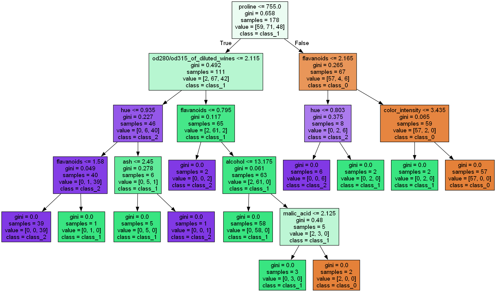
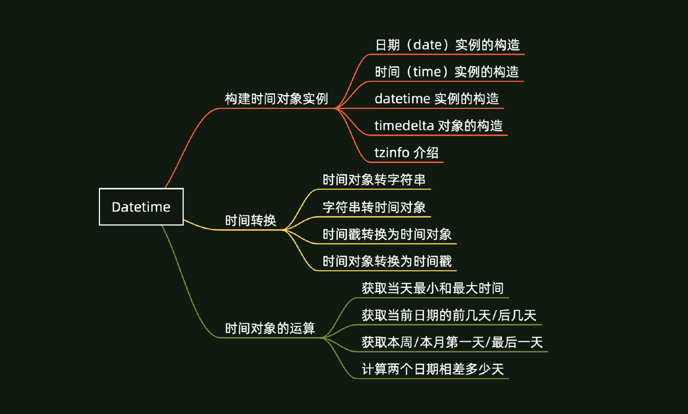
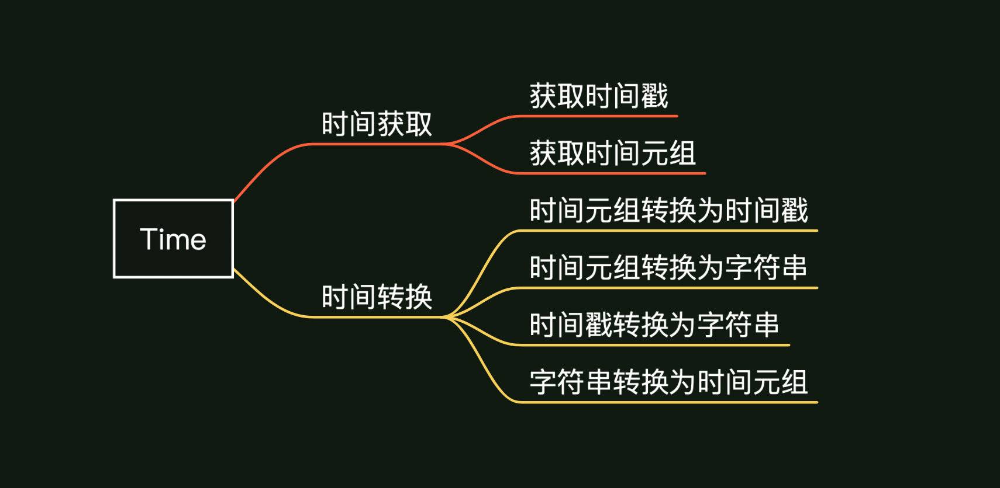
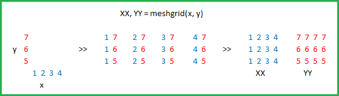
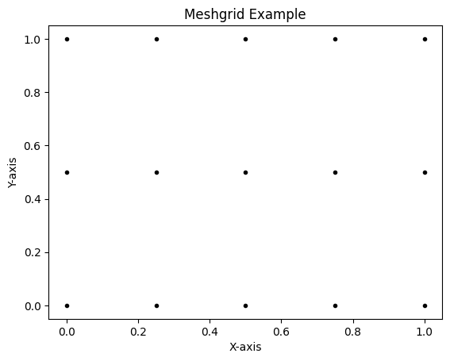
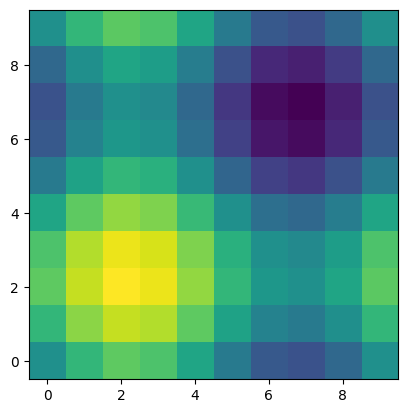
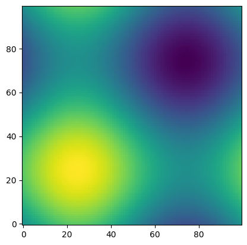

Python基本语法
Python基本语法总结
本文参考《Python 数据之道》，为重温语法制作。
本文适合有一定编程基础或复习语法的读者阅读。
print("Hello Python") |
Hello Python
字符串

创建字符串
在 Python 中处理文本数据是使用 str 对象，也称为字符串。字符串字面值有多种不同的写法：
- 单引号: ‘允许包含有 “双” 引号’
- 双引号: “允许包含有 ‘单’ 引号”。
- 三重引号: ’‘’ 三重单引号” ’, ””“三重双引号”””
使用三重引号的字符串可以跨越多行 —— 其中所有的空白字符都将包含在该字符串字面值中
s1 = 'hello' |
hello
world
my
python
s4 = ''' |
my
python
访问字符串中的值
字符串（string）支持用切片的方式来访问字符串中的值。该功能在 Python 的 list 中经常会用到。
s1 = "hello world 你好，Python" |
h
hello
world 你好，Python
字符串格式化
Python 支持格式化字符串的输出，一般有 3 种方式可以实现，包括 format ，% ，f-string 。
s1 = 'hello' |
s1 = hello, s2 = world
print('s1 = %s, s2 = %s' % (s1,s2)) |
s1 = hello, s2 = world
print(f's1 = {s1}, s2 = {s2}') |
s1 = hello, s2 = world
数字格式化
在进行字符串格式化时，经常会遇到需要经数字格式化为字符串，并且要按某种特定的格式来显示。
数字格式化为字符串，可以用 format 、% 或 f-string 方法来实现。
n1 = 1.23456789 |
保留两位小数：1.23
保留两位小数：1.23, 12345.68
保留两位小数：1.23
# 百分比 |
百分比：123.46%
百分比：12,345.68
#字符串对齐格式，设置默认宽度为8 |
12
12
12
#数字补零，或者补特定符号，比如‘-’ |
左边补零：0012
右边补 -：12--
n1 = 1.23456 |
正数前加正号，负数前加负号：
+1.23
-123.46
正数前无符号，负数前加负号：
1.23
-123.46
正数前加空格，负数前加负号：
1.23
-123.46
数字格式化常见的格式整理如下：

字符串的基本运算
拼接字符串
s1 = 'hello' |
hello world!
hellohello
字符串的大小写转换
s = 'Hello, My world!' |
每个单词的首字母大写： Hello, My World!
段落的首字母大写： Hello, my world!
所有字母小写： hello, my world!
所有字母大写： HELLO, MY WORLD!
大写转小写，小写转大写： hELLO, mY WORLD!
使用换行和制表符
# \n 换行 |
hello
world
hello world
字符串分割
字符串的分割，通常有 split 和 partition 系列方法。
-
split
split 系列方法包括 split() 、rsplit() 、splitlines() 等。
split() 将一个字符串分隔成多个字符串组成的列表，不含分隔符；rsplit() 的功能与 split() 类似，只不过是从字符串最后面开始分割；splitlines() 按照 (\n, \r, \r\n 等) 分隔，分割成列表。
s = '''Technology is evolving at a rapid pace, significantly impacting our daily lives. |
Technology is evolving at a rapid pace, significantly impacting our daily lives.
This progress brings both opportunities and challenges that we must navigate carefully.
# 按空格分割 |
['Technology', 'is', 'evolving', 'at', 'a', 'rapid', 'pace,', 'significantly', 'impacting', 'our', 'daily', 'lives.', 'This', 'progress', 'brings', 'both', 'opportunities', 'and', 'challenges', 'that', 'we', 'must', 'navigate', 'carefully.']
# 按某个字符分割 |
['Technology is evolving ', 't ', ' r', 'pid p', 'ce, signific', 'ntly imp', 'cting our d', 'ily lives.\nThis progress brings both opportunities ', 'nd ch', 'llenges th', 't we must n', 'vig', 'te c', 'refully.']
# 按某个字符分割，只分割一次 |
['Technology is evolving ', 't a rapid pace, significantly impacting our daily lives.\nThis progress brings both opportunities and challenges that we must navigate carefully.']
['Technology is evolving at a rapid pace, significantly impacting our daily lives.\nThis progress brings both opportunities and challenges that we must navigate c', 'refully.']
# 去掉换行符，以换行符分割成列表 |
['Technology is evolving at a rapid pace, significantly impacting our daily lives.', 'This progress brings both opportunities and challenges that we must navigate carefully.']
-
partition
partition 系列方法包括 partition() 和 rpartition()
partition() 根据指定的分隔符 (sep) 将字符串进行分割，从字符串左边开始索引分隔符 sep, 索引到则停止索引，返回的是一个包含三个元素的元组 (tuple)，即 (head, sep, tail)。
# 遇到第一个分隔符后就停止索引 |
('T', 'e', 'chnology is evolving at a rapid pace, significantly impacting our daily lives.\nThis progress brings both opportunities and challenges that we must navigate carefully.')
('Technology is evolving at a rapid pace, significantly impacting our daily lives.\nThis progress brings both opportunities and challenges that we must navigate carefully.', '', '')
# rpartition() 的功能与 partition() 类似，从字符串最后面开始分割。 |
('Technology is evolving at a rapid pace, significantly impacting our daily lives.\nThis progress brings both opportunities and challenges that we must navigate car', 'e', 'fully.')
('', '', 'Technology is evolving at a rapid pace, significantly impacting our daily lives.\nThis progress brings both opportunities and challenges that we must navigate carefully.')
- split 和 partition 系列方法的区别
去除字符串两边的空白
s = ' hello world ' |
'hello world'
# 去除字符串右侧的空白 |
' hello world'
# 去除字符串左侧的空白 |
'hello world '
其他一些运算
s = '''Technology is evolving at a rapid pace, significantly impacting our daily lives. |
13
# 计算字符串的长度 |
168
# 字符替换 |
Technology is evolving At A rApid pAce, significAntly impActing our dAily lives.
This progress brings both opportunities And chAllenges thAt we must nAvigAte cArefully.
Technology is evolving At a rapid pace, significantly impacting our daily lives.
This progress brings both opportunities and challenges that we must navigate carefully.
# 判断是否以某字符开头 |
False
# 判断是否以某字符结尾 |
True
List
初识 list
list 是 Python 内置的一种高级数据类型，是一种有序的集合。
names = ['James', 'Michael', 'Emma', 'Emily'] |
<class 'list'>
['James', 'Michael', 'Emma', 'Emily']
4
访问列表中的值
用索引来访问 list 中的每个元素，请注意索引是从 0 开始，最后一个的索引编号为 n-1，即所有元素的编号依次为(0,1, 2, …, n-1)。
print(names[0]) |
James
['James', 'Michael', 'Emma']
还可以通过 for 循环来列出所有元素
for name in names: |
James
Michael
Emma
Emily
for i in range(len(names)): |
James
Michael
Emma
Emily
列表的操作、函数及方法
list 中元素的增、改、删等操作
list 是一个可变的有序列表，可以通过添加、修改、删除等操作来操作 list 中的元素。
往 list 中添加元素
可以通过 append() 和 insert() 方法来往 list 中添加元素。
其中，append() 方法是在 list 的末尾添加元素；insert() 是在指定位置添加元素。
names = ['James', 'Michael', 'Emma', 'Emily'] |
['James', 'Michael', 'Emma', 'Emily', 'Tom']
names.insert(1,'Jack') |
['James', 'Jack', 'Michael', 'Emma', 'Emily', 'Tom']
删除 list 中的元素
- 用 pop() 方法删除 list 末尾的元素
names.pop() |
'Tom'
print(names) |
['James', 'Jack', 'Michael', 'Emma', 'Emily']
- 删除指定位置的元素，用 pop(i) 方法
names.pop(0) |
'James'
print(names) |
['Jack', 'Michael', 'Emma', 'Emily']
修改 list 中的元素
可以直接通过 list 的索引进行赋值来实现
names[1] = 'Black' |
['Jack', 'Black', 'Emma', 'Emily']
列表操作符
列表可以进行“+”和“*”运算
“+”相当于拼接链表
“*”相当于重复列表
此外，还可以判断元素是否存在于列表中
l1 = [1,2,3] |
列表相加： [1, 2, 3, 'a', 'b', 'c']
列表相乘： [1, 2, 3, 1, 2, 3]
判断元素是否存在于列表中： True False
列表函数 & 方法
列表的常用函数：
len(list)，列表的长度，即列表元素个数max(list)，返回列表最大值min(list)，返回列表最小值list(sep)，将元组转为列表
列表的常用方法：
除了前面提到的增、改、删等方法外，还有其他一些常用方法
list.count(obj)，统计某个元素在列表中出现的次数list.extend(seq)，在列表末尾一次性追加另一个序列中的多个值（用新列表扩展原来的列表）list.index(obj)，从列表中找出某个值的第一个匹配项的索引位置list.remove(obj)，移除列表中某个值的第一个匹配项list.sort()，对列表进行排序list.reverse()，对列表进行反向排序
l1 = [1,2,3,5,4,6,9,8,7,1] |
列表的最大值： 9
列表的最小值： 1
将元组转为列表： [10, 100, 50]
print('count：',l1.count(1)) |
count： 2
extend： [1, 2, 3, 5, 4, 6, 9, 8, 7, 1, 7, 5, 1, 3, 2]
index： 1
remove： [5, 1, 3, 2]
sort： [1, 2, 3, 5]
reverse： [5, 3, 2, 1]
list 中元素的类型
同一个 list 中的元素的类型可以是字符串（str）、整型（int）、布尔型（Boolean）、以及嵌套的 list 等等
list_1 = ['Tom', 1, 2, [1.1, 2.2], True] |
['Tom', 1, 2, [1.1, 2.2], True]
[1.1, 2.2]
1.1
list 的切片（slices）
可以通过切片 (slices) 的形式来获取 list 部分连续的元素。
list_1 = ['James', 'Ava', 'Michael', 'Emma', 'Emily', 'Jacob'] |
['James', 'Ava', 'Michael', 'Emma', 'Emily', 'Jacob']
list 中以切片形式使用时，其结构可以参考：new_list[start:end:step]
其中 start 和 end 表示索引位置的开始和结束，选取的元素包括 start ，但是不包含 end
step 表示步长，默认 step 为1
print(list_1[0:2]) |
['James', 'Ava']
['James', 'Michael', 'Emily']
Jacob
['Jacob', 'Emily', 'Emma', 'Michael', 'Ava', 'James']
当 step 为正数时，从左到右以该步长来获取列表中的元素；
当 step 为负数时，从右到左以该步长的绝对值来获取列表中的元素。
列表推导式
但是如果想获取离散的元素，比如想获取第 1、3、4 个元素
print(list_1[1,3,4]) |
---------------------------------------------------------------------------
TypeError Traceback (most recent call last)
Cell In[158], line 1
----> 1 print(list_1[1,3,4])
TypeError: list indices must be integers or slices, not tuple
可以看到直接报错，直接使用离散的索引是不行的，它提示 list 的索引必须是整数或者 slices。
此时，则可以使用列表推导式完成任务。
列表推导式的一般情况
列表推导式的一般语法结构：
new_list = [x for x in iterable]
其中，iterable表示可迭代的对象，包括字符串（str）、列表（list）、元组（tuple）、字典（dict）、集合（set），以及生成器（generator）等。
几个简单的示例：
str_list = [x.lower() for x in 'Hello, World'] |
['h', 'e', 'l', 'l', 'o', ',', ' ', 'w', 'o', 'r', 'l', 'd']
list_list = [x*2 for x in [1,2,3,4]] |
[2, 4, 6, 8]
tuple_list = [x**2 for x in (1,2,3,4)] |
[1, 4, 9, 16]
ge_list = [x for x in range(8)] |
[0, 1, 2, 3, 4, 5, 6, 7]
两层 for 循环的列表推导式
列表推导式中，可以同时包含多个 for 循环，比如同时两个 for 循环
two_for_list = [x**2+y for x in range(5) for y in range (4,8)] |
[4, 5, 6, 7, 5, 6, 7, 8, 8, 9, 10, 11, 13, 14, 15, 16, 20, 21, 22, 23]
上述结果跟下面的写法结果是一致的：
two_for_list = [] |
[4, 5, 6, 7, 5, 6, 7, 8, 8, 9, 10, 11, 13, 14, 15, 16, 20, 21, 22, 23]
使用两个变量来生成 list
列表推导式也可以使用两个或多个变量来生成 list，结合字典的使用，举例如下：
d = {'x':'1', 'y':'2', 'z':'3'} |
['x=1', 'y=2', 'z=3']
含 if 语句的列表推导式
列表推导式中还可以引入 if 条件语句
if_list = [x for x in range(10) if x%2==0] |
[0, 2, 4, 6, 8]
if_list = [] |
[0, 2, 4, 6, 8]
当然，如果仅仅是编写上更简洁，可能不一定能显现出列表推导式的优势，下面我们来对比下上述两种方式的运行效率。
%%timeit |
689 ns ± 6.58 ns per loop (mean ± std. dev. of 7 runs, 1,000,000 loops each)
%%timeit |
729 ns ± 2.9 ns per loop (mean ± std. dev. of 7 runs, 1,000,000 loops each)
从上面的运行结果进行对比，可以看出列表推导式的运行效率要高于普通的 for 循环编写方式。
包含 if-else 语句的列表推导式
[x**2 if x%2==0 else x+2 for x in range(10)] |
[0, 3, 4, 5, 16, 7, 36, 9, 64, 11]
包含两个 if 语句的列表推导式
[x**2 for x in range(10) if x%2==0 if x%3==0] |
[0, 36]
小结
如果想获取离散的元素：
list_1 = ['James', 'Ava', 'Michael', 'Emma', 'Emily', 'Jacob'] |
['Ava', 'Emma', 'Emily']
字典
主要内容包括：
- 字典的基本用法
- 字典推导式
- 字典合并
- 嵌套字典
基本用法
字典是一种可以将相关的两个信息关联起来的操作，并且字典可存储的信息量几乎不受限制。
字典用于存放具有映射关系的数据。
为了保存具有映射关系的数据，Python 提供了字典，字典相当于保存了两组数据，其中一组数据是关键数据，被称为 key；另一组数据可通过 key 来访问，被称为 value。
创建字典
字典是以 key、value 的形式创建的。
字典的每个键值 key=>value 对用冒号 : 分割，每个键值对之间用逗号 , 分割，整个字典包括在花括号 {} 中, 格式如下所示：
d = {key1 : value1, key2 : value2 }
一般情况下，字典的创建可以有以下几种方式：
# 创建一个空的字典 |
dic_1: {}
dic_2: {1: 'one', 2: 'second'}
dic_3: {'name': 'Tom', 'age': '22'}
dic_4: {'name': 'Tom', 1: [2, 4, 3]}
dic_5: {1: 'Tom', 2: 'Jack'}
dic_6: {1: 'apple', 2: 'ball'}
获取字典中的元素
通过 key 来获取 value
获取字典中的元素，可以直接通过 key 值来获取对应的 value，如下：
dic_ = {'name': 'John', 'age': 25 , 1: [2, 4, 3]} |
John
John
如果字典的 key 值中没有该元素，则不能获取相应的 value，这种情况下产生错误。
print(dic_['name1']) |
---------------------------------------------------------------------------
KeyError Traceback (most recent call last)
Cell In[205], line 1
----> 1 print(dic_['name1'])
KeyError: 'name1'
通过 value 来获取 key
通过 value 来获取 key 值，在 Python 中并没有提供直接的方法，但是可以通过自定义函数来实现，如下：
def get_keys(d,value): |
['name']
在字典中修改或添加元素
在字典中，可以修改已有 key 对应的 value 值，或者添加新的 key-value 键值对数据，如下：
dic_ = {'name': 'John', 'age': 25 , 1: [2, 4, 3]} |
{'name': 'John', 'age': 35, 1: [2, 4, 3], 'gender': 'man'}
从字典中删除元素
pop()方法
移除字典数据 pop() 方法的作用是：删除指定给定键所对应的值，返回这个值并从字典中把它移除。
# 使用pop()方法来删除 |
{'name': 'John', 1: [2, 4, 3]}
del 方法
# 使用 del 方法来删除 |
{'name': 'John', 1: [2, 4, 3]}
另外，del 可以删除整个字典
dic_ = {'name': 'John', 'age': 25 , 1: [2, 4, 3]} |
---------------------------------------------------------------------------
NameError Traceback (most recent call last)
Cell In[214], line 4
1 dic_ = {'name': 'John', 'age': 25 , 1: [2, 4, 3]}
3 del dic_
----> 4 print(dic_)
NameError: name 'dic_' is not defined
clear() 方法
clear() 方法是用来清除字典中的所有数据，因为是原地操作，所以返回 None（也可以理解为没有返回值）
# 使用 clear() 方法来清空字典中的所有数据，返回的是一个空字典 |
{}
字典内置函数 & 方法
Python 字典包含了以下内置函数：
len(), str(), type() 函数：
dic_ = {'name': 'John', 'age': 25 , 1: [2, 4, 3]} |
3
{'name': 'John', 'age': 25, 1: [2, 4, 3]}
<class 'dict'>
Python 字典包含以下一些方法：
copy, keys, values, items 方法
dic_ = {'name': 'John', 'age': 25 , 1: [2, 4, 3], 'gender': 'man'} |
copy: {'name': 'John', 'age': 25, 1: [2, 4, 3], 'gender': 'man'}
keys: dict_keys(['name', 'age', 1, 'gender'])
values: dict_values(['John', 25, [2, 4, 3], 'man'])
items: dict_items([('name', 'John'), ('age', 25), (1, [2, 4, 3]), ('gender', 'man')])
update 方法
通过 update 方法，可以更新字典的数据内容：
dic_1 = {'name': 'Lemon', 'age': 25 , 1: [2, 4, 3], 'gender': 'man'} |
{'name': 'John', 'age': 35, 1: [2, 4, 3], 'gender': 'man'}
fromkeys 方法
seq = ['brand', 'model', 'year'] |
{'brand': ['Toyota', 'Corolla', 2020], 'model': ['Toyota', 'Corolla', 2020], 'year': ['Toyota', 'Corolla', 2020]}
zip（）方法
seq = ['brand', 'model', 'year'] |
{'brand': 'Toyota', 'model': 'Corolla', 'year': 2020}
注意zip和fromkeys的区别
setdefault 方法
dict.setdefault(key, default=None)
该方法接收两个参数，第一个参数是健的名称，第二个参数是默认值。
假如字典中不存在给定的键，则把默认值赋值给对应的 value，并返回默认值；
反之，不修改 value，只返回 value。
dic_ = { |
字典中存在的key，返回对应value： 30
字典中不存在的key，返回默认值： 0
此外，还可以用 setdefault() 方法统计一个列表里单词出现的次数：
words_list = ['apple', 'banana', 'apple', 'orange', 'banana', 'apple', 'grape', 'orange', 'grape', 'grape'] |
{'apple': 3, 'banana': 2, 'orange': 2, 'grape': 3}
字典推导式
字典推导式的一般表达式如下：
{key: value for (key, value)in iterable} |
有些用法与列表推导式是类似的。
用字典推导式的方法创建字典：
dic_ = {x:x**2 for x in range(6)} |
{0: 0, 1: 1, 2: 4, 3: 9, 4: 16, 5: 25}
通过两个 list 创建字典：
keys = ['name', 'age', 'city', 'profession'] |
{'name': 'Alice', 'age': 30, 'city': 'New York', 'profession': 'Engineer'}
{'name': 'Alice', 'age': 30, 'city': 'New York', 'profession': 'Engineer'}
在特定条件下，用字典推导式的方法创建字典：
dic_ = {x:x*2 for x in range(10) if x%2==0} |
{0: 0, 2: 4, 4: 8, 6: 12, 8: 16}
字典合并
先来看看下面的运行结果
x = {'a':1, 'b':2} |
None
发现 z 返回的是 None 值，并不是我们想要的结果。
再来看一下此时 x 的返回结果，发现 x 已经是合并的结果。
print(x) |
{'a': 1, 'b': 4, 'c': 5}
1.字典解包
字典解包（dictionary unpacking）是指使用 ** 操作符将一个字典的键值对解包成独立的键值对，可以将它们合并到另一个字典中或传递给一个函数。在Python中，解包操作符 ** 可以用于将字典中的内容展开成关键字参数。
x = {'a':1, 'b':2} |
{'a': 1, 'b': 4, 'c': 5}
在这个例子中，**x 将字典 x 的内容解包，**y 将字典 y 的内容解包，并且把它们合并到新的字典 z 中。如果两个字典中有相同的键，后一个字典的值会覆盖前一个字典的值。
2.自定义函数
def merge(x,y): |
{'a': 1, 'b': 4, 'c': 5}
3.多个 dict 进行合并
多个 dictionary 合并同样可以通过自定义的形式来实现。
def merge_dicts(*dict_args): |
{'a': 1, 'b': 4, 'c': 5, 'd': 8, 'e': 10}
在函数定义中，星号（*）表示将所有位置参数收集到一个元组中。
嵌套型字典
字典是以 key,value的形式创建的，而嵌套型的字典有一个特征，就是key对应的value值也可以是一个字典。
dic_ = {key_1 : {key1:value1}, |
创建一个嵌套型字典
dic_ = { |
{'student': {'name': 'John', 'age': 22}, 'course': {'title': 'Introduction to Python', 'instructor': 'Dr. Smith'}}
从嵌套型字典中获取元素
从嵌套型字典中获取元素，跟从 list，以及数组中获取元素时有些类似的。
嵌套型字典用 [] 进行不同层级元素的获取。
print(dic_['student']) |
{'name': 'John', 'age': 22}
John
修改嵌套型字典的元素（更改、增加或删除元素）
增加一个空的字典
dic_ = { |
{1: {'product': 'Laptop', 'price': 999.99},
2: {'product': 'Smartphone', 'price': 499.99},
3: {'product': 'Tablet', 'price': 299.99},
4: {}}
修改或增加新的元素
# 修改 |
{1: {'product': 'Laptop', 'price': 999.99},
2: {'product': 'Smartphone', 'price': 499.99},
3: {'product': 'Tablet', 'price': 599.99, 'count': 10},
4: {}}
在嵌套型字典中直接添加一个字典
dic_[5] = {'product': 'Smartwatch', |
{1: {'product': 'Laptop', 'price': 999.99},
2: {'product': 'Smartphone', 'price': 499.99},
3: {'product': 'Tablet', 'price': 599.99, 'count': 10},
4: {},
5: {'product': 'Smartwatch', 'price': 199.99}}
删除某个具体元素内容
del dic_[3]['count'] |
{1: {'product': 'Laptop', 'price': 999.99},
2: {'product': 'Smartphone', 'price': 499.99},
3: {'product': 'Tablet', 'price': 599.99},
4: {},
5: {'product': 'Smartwatch', 'price': 199.99}}
通过 for 循环来获取嵌套字典内的元素
for id_,info in dic_.items(): |
id= 1
product:Laptop
price:999.99
id= 2
product:Smartphone
price:499.99
id= 3
product:Tablet
price:599.99
id= 4
id= 5
product:Smartwatch
price:199.99
用 pprint 输出嵌套型字典
用 pprint 可以使字典显示层次更清晰，需要安装 pprint，在jupyter notebook中的安装命令如下：
!pip install pprint |
pprint 可以使字典显示层次更清晰
#!pip install pprint |
{'fiction': {'fantasy': {'Harry Potter': 'excellent', 'Lord of the Rings': 'good'}, 'mystery': {'Sherlock Holmes': 'excellent', 'Agatha Christie': {'Poirot': 'good', 'Miss Marple': 'average'}}}, 'non-fiction': {'history': {'Sapiens': 'excellent', 'Guns, Germs, and Steel': 'good'}, 'science': {'Cosmos': 'excellent', 'Brief History of Time': {'Stephen Hawking': 'excellent', 'others': 'average'}}}}
{‘fiction’: {‘fantasy’: {‘Harry Potter’: ‘excellent’,
‘Lord of the Rings’: ‘good’},
‘mystery’: {‘Agatha Christie’: {‘Miss Marple’: ‘average’,
‘Poirot’: ‘good’},
‘Sherlock Holmes’: ‘excellent’}},
‘non-fiction’: {‘history’: {‘Guns, Germs, and Steel’: ‘good’,
‘Sapiens’: ‘excellent’},
‘science’: {‘Brief History of Time’: {‘Stephen Hawking’: ‘excellent’,
‘others’: ‘average’},
‘Cosmos’: ‘excellent’}}}
嵌套型字典的一些用途
这里分享一个用途。嵌套型字典，经常在机器学习中的决策树算法中涉及到。
使用了 scikit-learn 库的内置数据集 load_wine 来加载一个葡萄酒数据集。
这个数据集包含不同类型的葡萄酒样本及其相关的化学特征，用于分类任务。
from sklearn.tree import DecisionTreeClassifier, export_graphviz |

内置时间模块：Datetime
简介
Python 内置时间处理模块主要包括：
- Datetime
- Time
- Calendar
概括来说，时间和日期处理的模块和库，有几个主要的概念都是会涉及的，包括：
日期，时间，时间戳，时间和字符串的转换，时区等。
Datetime、Time、Calendar这三个模块中，用的较多的是Datetime。
针对Datetime模块，从构建时间对象实例、时间转换、时间对象的运算三个方面进行了梳理，共涉及 13 个知识
点，整理的大纲如下：

针对Time模块，从时间获取和时间转换两个方面进行了梳理，共涉及 6 个知识点，整理的大纲如下：

首先要介绍的是用的较多的 datetime 模块, 它属于 Python 的内置模块，功能相对较全。
构建时间对象实例
import datetime |
时间实例的构造包括日期（如 2024 年 6 月 26 日），时间（如 22 点 28 分 32 秒），
或者是包含 date 和 time 的datetime （如 2024 年 6 月 26 日 22 点 28 分 32 秒）。
日期（date）实例的构造
date 是一个理想化的简单型日期，属性有 year , month , day
# 构造日期date |
datetime.date(2024, 6, 26)
print(d1) |
2024-06-26
除了上面的构造方式，在 date 实例化的时候，还可以通过 date.today() 来构造当天的日期。
datetime.date.today() |
datetime.date(2024, 6, 26)
date 类型的日期，可以通过 .year , .month , .day 来获取日期所属的年份，月份，和具体的日期号。
print('日期所属的年份为：',d1.year) |
日期所属的年份为： 2024
日期所属的月份为： 6
日期具体的日期号为： 26
时间 time 实例的构造
time 是一个独立于任何特定日期的理想化时间，其属性有 hour（小时），minute（分钟），second（秒），microsecond（微秒）
和 tzinfo（时区信息）
t1 = datetime.time(22,43,46) |
datetime.time(22, 43, 46)
print('time所属的小时为:',t1.hour) |
time所属的小时为: 22
time所属的分钟为: 43
time所属的秒为: 46
datetime 实例的构造
datetime 是日期和时间的结合，其属性有 year，month，day，hour，minute，second ，microsecond 和tzinfo。
dt1 = datetime.datetime(2024,6,26,22,49,50) |
datetime.datetime(2024, 6, 26, 22, 49, 50)
除了上面的构造方式，在 datetime 实例化的时候，还有其他的一些方式，包括使用 datetime.now() 和
datetime.today()，以及在 date 的基础上使用 combine 方法等。
dt2 = datetime.datetime.now() |
datetime.datetime(2024, 6, 26, 22, 51, 24, 544538)
dt3 = datetime.datetime.today() |
datetime.datetime(2024, 6, 26, 22, 52, 24, 233317)
区别：
- 时区参数：datetime.datetime.now() 可以接受一个 tz 参数，以返回指定时区的当前时间，而 datetime.datetime.today() 则没有此功能，总是返回本地时间。
- 功能：在没有提供 tz 参数的情况下，这两个方法的功能实际上是相同的，都是返回本地时间。
datetime.datetime.combine(date, time) 它可以将一个日期对象 (date) 和一个时间对象 (time) 结合起来，创建一个新的 datetime 对象。
dt4 = datetime.datetime.combine(d1,t1) |
datetime.datetime(2024, 6, 26, 22, 43, 46)
通过 datetime 的实例化，是我们使用时间是经常用到的方法，在日常具体使用过程中，可能只需要具体到某天，
或者只需要具体到某天的某个时间点，这时候，也可以通过 datetime 的一些方法来实现
dt_ = datetime.datetime.now() |
datetime.date(2024, 6, 26)
# 从datetime来获取具体的时间点 |
datetime.time(22, 58, 24, 467936)
同样的 datetime 类型的时间，可以通过 .year , .month , .day 来获取日期所属的年份，月份，和具体的日期号。
print(f'日期所属的年份为：{dt_.year}') |
日期所属的年份为：2024
日期所属的月份为：6
日期所属的日期为：26
还有一个可能涉及到的时间是获取某天属于星期几，可以通过weekday() 和 isoweekday() 方法来实现。
# 从 datetime 来获取日期是星期几 |
2
# 从 datetime 来获取日期是星期几 |
3
datetime 还有一种方法。如果 datetime 的值由于某些原因弄错了，还可以通过 replace() 方法来进行更正。
replace 方法的参数如下：
datetime.replace(year=self.year, month=self.month, day=self.day, hour=self.hour, |
dt_new = dt_.replace(month = 7) |
datetime.datetime(2024, 7, 26, 22, 58, 24, 467936)
timedelta 对象的构造
timedelta 对象表示两个 date 或者 time 或者 datetime 的时间间隔。
class datetime.timedelta(days=0, seconds=0, microseconds=0, milliseconds=0, |
所有参数都是可选的并且默认为 0。这些参数可以是整数或者浮点数，也可以是正数或者负数。
只有 days, seconds 和 microseconds 会存储在内部。参数单位的换算规则如下：
- 1 毫秒会转换成 1000 微秒。
- 1 分钟会转换成 60 秒。
- 1 小时会转换成 3600 秒。
- 1 星期会转换成 7 天。
delta = datetime.timedelta(weeks=3, |
datetime.timedelta(days=31, seconds=24640, microseconds=1000)
print(delta) |
31 days, 6:50:40.001000
tzinfo 介绍
datetime.tzinfo 返回 datetime 对象的时区，前提是在创建 datetime 对象时需传入 tzinfo 参数，如果没有传入则返回值为 None 。
import pytz |
<DstTzInfo 'Asia/Shanghai' CST+8:00:00 STD>
时间转换
时间的三种存在方式：时间对象，时间字符串，时间戳。
时间对象，比如前面介绍的 date 、datetime 、time 对象等；
时间字符串，如：“2024-6-27”；
时间戳，如 time.time() 返回的就是时间戳。
在数据处理过程中，经常会遇到需要将不同形式的时间进行转换。这里介绍下常用的方法：
时间对象转字符串
时间对象转换为字符串，可以通过 isoformat 或 strftime 方法来实现。
isoformat 是 ISO 8601 格式的缩写，ISO 是 International Organization for Standardization（国际标准化组织）的缩写，因此 isoformat 的全称可以解释为 ISO 8601 format，即“国际标准化组织 8601 格式”。
strftime 的英文全称是 str format time ，根据给定的格式将时间对象转换为字符串
# 将 date 时间对象转换为字符串 |
'2024-06-27'
#用 srtftime 来转换 |
YYYY-MM-DD: 2024-06-27
MM DD,YYYY: Jun 27, 2024
# 将 time 时间对象转换为字符串 |
00:17:02
# 将 datetime 时间对象转换为字符串 |
'2024-06-27 00:17:11'
dt_.isoformat() |
'2024-06-27T00:17:11.564718'
python 中常见的时间日期格式化符号：
| 指令 | 意义 | 示例 |
|---|---|---|
| %a | 当地工作日的缩写。 | Sun, Mon, …, Sat (en_US); So, Mo, …, Sa (de_DE) |
| %A | 本地化的星期中每日的完整名称。 | Sunday, Monday, …, Saturday (en_US); Sonntag, Montag, …, Samstag (de_DE) |
| %w | 以十进制数显示的工作日，其中 0 表示星期日，6 表示星期六。 | 0, 1, …, 6 |
| %d | 补零后，以十进制数显示的月份中的一天。 | 01, 02, …, 31 |
| %b | 当地月份的缩写。 | Jan, Feb, …, Dec (en_US); Jan, Feb, …, Dez (de_DE) |
| %B | 本地化的月份全名。 | January, February, …, December (en_US); Januar, Februar, …, Dezember (de_DE) |
| %m | 补零后，以十进制数显示的月份。 | 01, 02, …, 12 |
| %y | 补零后，以十进制数表示的，不带世纪的年份。 | 00, 01, …, 99 |
| %Y | 十进制数表示的带世纪的年份。 | 0001, 0002, …, 2013, 2014, …, 9998, 9999 |
| %H | 以补零后的十进制数表示的小时 (24 小时制)。 | 00, 01, …, 23 |
| %I | 以补零后的十进制数表示的小时（12 小时制）。 | 01, 02, …, 12 |
| %p | 本地化的 AM 或 PM。 | AM, PM (en_US); am, pm (de_DE) |
| %M | 补零后，以十进制数显示的分钟。 | 00, 01, …, 59 |
| %S | 补零后，以十进制数显示的秒。 | 00, 01, …, 59 |
| %f | 以十进制数表示的微秒，在左侧补零。 | 000000, 000001, …, 999999 |
| %z | UTC 偏移量，格式为 ±HHMM [SS[.ffffff]]（如果是简单型对象则为空字符串）。 | (空), +0000, -0400, +1030, +063415, -030712.345216 |
| %Z | 时区名称（如果对象为简单型则为空字符串）。 | (空), UTC, GMT |
| %j | 以补零后的十进制数表示的一年中的日序号。 | 001, 002, …, 366 |
| %U | 以补零后的十进制数表示的一年中的周序号（星期日作为每周的第一天）。在新的一年中第一个星期日之前的所有日子都被视为是在第 0 周。 | 00, 01, …, 53 |
| %W | 以十进制数表示的一年中的周序号（星期一作为每周的第一天）。在新的一年中第一个星期一之前的所有日子都被视为是在第 0 周。 | 00, 01, …, 53 |
| %c | 本地化的适当日期和时间表示。 | Tue Aug 16 21:30:00 1988 (en_US); Di 16 Aug 21:30:00 1988 (de_DE) |
| %x | 本地化的适当日期表示。 | 08/16/88 (None); 08/16/1988 (en_US); 16.08.1988 (de_DE) |
| %X | 本地化的适当时间表示。 | 21:30:00 (en_US); 21:30:00 (de_DE) |
| %% | 字面的 ‘%’ 字符。 | % |
字符串转时间对象
字符串转时间对象，用的是 strptime 方法，与 strftime 方法刚好相反。
strptime 的英文全称是 str parse time ，将字符串解析为给定相应格式的时间对象。
s1 = '2024-6-27' |
datetime.datetime(2024, 6, 27, 0, 0)
下面提供了 strftime 方法与 strptime 方法的比较：
| strftime | strptime | |
|---|---|---|
| 用法 | 根据给定的格式将对象转换为字符串 | 将字符串解析为给定相应格式的 datetime 对象 |
| 方法类型 | 实例方法 | 类方法 |
| 方法 | date; datetime; time | datetime |
| 签名 | strftime(format) | strptime(date_string, format) |
需要注意的是，strftime 方法可供 date、time 和 datetime 对象使用，而 strptime 方法仅供 datetime对象使用。
时间戳转换为时间对象
时间戳是指格林威治时间 1970 年 01 月 01 日 00 时 00 分 00 秒 (北京时间 1970 年 01 月 01 日 08 时 00 分 00秒) 起至现在的总秒数。
import time |
1719478791.584069
# 获取当天 00:00:00 的时间戳 |
1719446400
# 获取当天 23:59:59 的时间戳 |
1719532799
# 将时间戳转换为时间对象 |
datetime.datetime(2024, 6, 27, 16, 59, 51, 584069)
# 将时间戳转换为时间对象 |
datetime.date(2024, 6, 27)
将时间对象转换为时间戳
鉴于时间戳是指从格林威治时间 (UTC) 1970 年 1 月 1 日 00:00:00 (北京时间 1970 年 1 月 1 日 08:00:00) 起至现在所经过的总秒数。
因此，当我们将一个时间对象转换为时间戳时，只需计算该时间对象与基准时间（即1970年1月1日）的时间差 (timedelta)，并将该时间差以秒为单位表示即可。
dt_n = datetime.datetime.now() |
datetime.datetime(2024, 6, 27, 17, 10, 49, 468455)
# 注意这里要使用北京时间 |
datetime.datetime(1970, 1, 1, 8, 0)
timedelta_1 = dt_n-dt_s |
1719479449.468455
再将得到的时间戳转换为时间对象：
datetime.datetime.fromtimestamp(timedelta_s) |
datetime.datetime(2024, 6, 27, 17, 10, 49, 468455)
时间对象的运算
获取当天最小时间和最大时间
# 获取当天最小时间 |
datetime.datetime(2024, 6, 27, 0, 0)
# 获取当天最大时间 |
datetime.datetime(2024, 6, 27, 23, 59, 59, 999999)
获取当前日期的前几天/后几天
# 获取明天 |
datetime.date(2024, 6, 28)
# 获取前一天 |
datetime.date(2024, 6, 26)
获取本周或本月第一天及最后一天
date_today = datetime.date.today() |
datetime.date(2024, 6, 24)
# 获取本周最后一天 |
datetime.date(2024, 6, 30)
计算两个日期相差多少天
dt1 = datetime.datetime(2024,6,19) |
datetime.timedelta(days=8, seconds=62919, microseconds=847392)
td1.days |
8
如果需要计算两个日期之间总共相差多少秒，应该用 total_seconds() 方法。
td1.seconds |
62919
td1.total_seconds() |
754119.847392
内置时间模块:Time
简介
time 模块提供了各种时间相关的函数。
由于时间处理涉及到时区相关的知识，在开始之前，有一些术语和惯例需要阐述：
-
UTC 是协调世界时（以前称为格林威治标准时间，或 GMT）。缩写 UTC 不是错误，而是英语和法语之间的妥协。在中国，UTC+8 表示中国标准时间。
-
DST 是夏令时，是在一年中的一部分时间调整时区一小时的制度。DST 规则非常复杂（由当地法律确定），并且每年都会发生变化。C 库中有一个包含本地规则的表（通常从系统文件中读取以获得灵活性），并且在这方面是 TrueWisdom 的唯一来源。
-
时间戳 是指从格林威治时间 1970 年 1 月 1 日 00:00:00 (北京时间 1970 年 1 月 1 日 08:00:00) 起至现在所经过的总秒数。
-
时间元组 (struct_time) 方式：
struct_time元组共有 9 个元素，返回struct_time的函数主要有gmtime()、localtime()和strptime()。下面列出这种方式元组中的几个元素：
| 索引 (Index) | 属性（Attribute） | 值（Values） |
|---|---|---|
| 0 | tm_year(年) | 比如 2020 |
| 1 | tm_mon (月) | 1-12 |
| 2 | tm_mday(日) | 1-31 |
| 3 | tm_hour(时) | 0-23 |
| 4 | tm_min (分) | 0-59 |
| 5 | tm_sec (秒) | 0-61 |
| 6 | tm_wday (一周中的第几日) | 0 - 6 （0 表示周日） |
| 7 | tm_yday (一年中的第几天) | 1-366 |
| 8 | tm_isdst (是否是夏令时) | 默认为 -1 |
时间获取
获取时间戳
time.time() 返回当前时间的时间戳
import time |
1719481545.882565
获取时间元组
# 返回当前时间的时间元组 (struct_time) |
time.struct_time(tm_year=2024, tm_mon=6, tm_mday=27, tm_hour=17, tm_min=53, tm_sec=20, tm_wday=3, tm_yday=179, tm_isdst=0)
# 返回当前时间的 UTC 时区的时间元组 (struct_time) |
time.struct_time(tm_year=2024, tm_mon=6, tm_mday=27, tm_hour=9, tm_min=53, tm_sec=20, tm_wday=3, tm_yday=179, tm_isdst=0)
struct_time 元组共有 9 个元素，如果想自定义构造时间元组，则可以通过传入一个数组来实现，如下：
t3_1 = time.struct_time([2024,6,27,17,54,34,3,179,0]) |
time.struct_time(tm_year=2024, tm_mon=6, tm_mday=27, tm_hour=17, tm_min=54, tm_sec=34, tm_wday=3, tm_yday=179, tm_isdst=0)
时间转换
时间元组转为时间戳
# 将 一 个 struct_time 转 化 为 时 间 戳 |
1719482000.0
时间元组为字符串
time.asctime() 函数将由 gmtime() 或 localtime() 返回的时间元组或 struct_time 对象转换为字符串。
格式如下：'Mon Dec 25 15:30:45 2023'。
简单来说，这个函数的作用是将时间元组转换为可读的字符串形式。
# 转 换 时 间 元 组 为 字 符 串 形 式 |
'Thu Jun 27 17:53:20 2024'
如果想自定义字符串的格式，可以通过 strftime() 函数来实现。strftime() 可以将时间元组转换为由 format 参数指定的字符串。
t5_1 = time.strftime('%Y-%m-%d',t2) |
'2024-06-27'
时间戳转换为字符串
time.ctime() 函数将以距离初始纪元（1970 年 1 月 1 日）的秒数表示的时间转换为以下形式的字符串：'Mon Dec 25 15:30:45 2023'，该字符串表示本地时间。
简单来说，这个函数的作用是将时间戳转换为可读的字符串形式。
# 转换时间戳为字符串形式 |
'Thu Jun 27 17:53:20 2024'
字符串转换为时间元组
strptime() 函数可以将特定格式的字符串解析为时间元组。字符串的默认匹配格式为 "%a %b %d %H:%M:%S %Y"。
time.strptime('Mon Dec 25 15:30:45 2023') |
time.struct_time(tm_year=2023, tm_mon=12, tm_mday=25, tm_hour=15, tm_min=30, tm_sec=45, tm_wday=0, tm_yday=359, tm_isdst=-1)
指令表格：
| 指令 | 意义 |
|---|---|
| %a | 本地化的缩写星期中每日的名称。 |
| %A | 本地化的星期中每日的完整名称。 |
| %b | 本地化的月缩写名称。 |
| %B | 本地化的月完整名称。 |
| %c | 本地化的适当日期和时间表示。 |
| %d | 十进制数 [01,31] 表示的月中日。 |
| %H | 十进制数 [00,23] 表示的小时（24 小时制）。 |
| %I | 十进制数 [01,12] 表示的小时（12 小时制）。 |
| %j | 十进制数 [001,366] 表示的年中日。 |
| %m | 十进制数 [01,12] 表示的月。 |
| %M | 十进制数 [00,59] 表示的分钟。 |
| %p | 本地化的 AM 或 PM 。 |
| %S | 十进制数 [00,61] 表示的秒。 |
| %U | 十进制数 [00,53] 表示的一年中的周数（星期日作为一周的第一天）。 在第一个星期日之前的新年中的所有日子都被认为是在第 0 周。 |
| %w | 十进制数 [0(星期日),6] 表示的周中日。 |
| %W | 十进制数 [00,53] 表示的一年中的周数（星期一作为一周的第一天）。 在第一个星期一之前的新年中的所有日子被认为是在第 0 周。 |
| %x | 本地化的适当日期表示。 |
| %X | 本地化的适当时间表示。 |
| %y | 十进制数 [00,99] 表示的没有世纪的年份。 |
| %Y | 十进制数表示的带世纪的年份。 |
| %z | 时区偏移以格式 +HHMM 或 -HHMM 形式的 UTC/GMT 的正或负时差指示， 其中 H 表示十进制小时数字，M 表示十进制分钟数字 [-23:59, +23:59]。 |
| %Z | 时区名称（如果不存在时区，则不包含字符）。 |
| %% | 字面的 ‘%’ 字符。 |
内置时间模块：Calendar
Python 内置的日历（calendar）模块主要用于输出与日历相关的内容。相对于 datetime 和 time 模块来说，calendar 模块的功能要简单一些。
最常用的两个功能是输出某年的日历以及某个月的日历。
获取某年的日历
import calendar |
# 获 取 某 年 的 日 历 并 打 印 出 来 |
2024
January February March
Mo Tu We Th Fr Sa Su Mo Tu We Th Fr Sa Su Mo Tu We Th Fr Sa Su
1 2 3 4 5 6 7 1 2 3 4 1 2 3
8 9 10 11 12 13 14 5 6 7 8 9 10 11 4 5 6 7 8 9 10
15 16 17 18 19 20 21 12 13 14 15 16 17 18 11 12 13 14 15 16 17
22 23 24 25 26 27 28 19 20 21 22 23 24 25 18 19 20 21 22 23 24
29 30 31 26 27 28 29 25 26 27 28 29 30 31
April May June
Mo Tu We Th Fr Sa Su Mo Tu We Th Fr Sa Su Mo Tu We Th Fr Sa Su
1 2 3 4 5 6 7 1 2 3 4 5 1 2
8 9 10 11 12 13 14 6 7 8 9 10 11 12 3 4 5 6 7 8 9
15 16 17 18 19 20 21 13 14 15 16 17 18 19 10 11 12 13 14 15 16
22 23 24 25 26 27 28 20 21 22 23 24 25 26 17 18 19 20 21 22 23
29 30 27 28 29 30 31 24 25 26 27 28 29 30
July August September
Mo Tu We Th Fr Sa Su Mo Tu We Th Fr Sa Su Mo Tu We Th Fr Sa Su
1 2 3 4 5 6 7 1 2 3 4 1
8 9 10 11 12 13 14 5 6 7 8 9 10 11 2 3 4 5 6 7 8
15 16 17 18 19 20 21 12 13 14 15 16 17 18 9 10 11 12 13 14 15
22 23 24 25 26 27 28 19 20 21 22 23 24 25 16 17 18 19 20 21 22
29 30 31 26 27 28 29 30 31 23 24 25 26 27 28 29
30
October November December
Mo Tu We Th Fr Sa Su Mo Tu We Th Fr Sa Su Mo Tu We Th Fr Sa Su
1 2 3 4 5 6 1 2 3 1
7 8 9 10 11 12 13 4 5 6 7 8 9 10 2 3 4 5 6 7 8
14 15 16 17 18 19 20 11 12 13 14 15 16 17 9 10 11 12 13 14 15
21 22 23 24 25 26 27 18 19 20 21 22 23 24 16 17 18 19 20 21 22
28 29 30 31 25 26 27 28 29 30 23 24 25 26 27 28 29
30 31
获取某月的日历
print(calendar.month(2024,6)) |
June 2024
Mo Tu We Th Fr Sa Su
1 2
3 4 5 6 7 8 9
10 11 12 13 14 15 16
17 18 19 20 21 22 23
24 25 26 27 28 29 30
也可以用 prmonth() 函数将结果直接打印出来，效果也是一样的。
calendar.prmonth(2024,6) |
June 2024
Mo Tu We Th Fr Sa Su
1 2
3 4 5 6 7 8 9
10 11 12 13 14 15 16
17 18 19 20 21 22 23
24 25 26 27 28 29 30
其他方法
calendar.monthcalendar()
返回表示一个月的日历的矩阵。每一行代表一周；此月份外的日子由零表示。每周从周一开始，除非使用 setfirstweekday() 改变设置。
print(calendar.monthcalendar(2024,6)) |
[[0, 0, 0, 0, 0, 1, 2], [3, 4, 5, 6, 7, 8, 9], [10, 11, 12, 13, 14, 15, 16], [17, 18, 19, 20, 21, 22, 23], [24, 25, 26, 27, 28, 29, 30]]
calendar.weekday()
返回某天是星期几，默认情况下 0-6 代表周一到周日。
print(calendar.weekday(2024,6,27)) |
3
calendar.setfirstweekday(weekday) |
设置每一周的开始日（0 表示星期一，6 表示星期天）。calendar 模块还提供了 MONDAY, TUESDAY, WEDNESDAY, THURSDAY, FRIDAY, SATURDAY 和 SUNDAY 几个常量，方便使用。例如，设置每周的第一天为星期天：
calendar.setfirstweekday(calendar.SUNDAY) |
calendar.weekheader(n)
返回一个包含星期几的缩写名的头。n 指定星期几缩写的字符宽度。
print(calendar.weekheader(3)) |
Sun Mon Tue Wed Thu Fri Sat
Numpy 的基本用法
注意: 本节内容只是一些基本语法，numpy还有很多的用处，后续会专门开一篇文章来讲述numpy的各种语法。
Numpy 是一个开源的 Python 科学计算库，它是 python 科学计算库的基础库，许多其他著名的科学计算库如
Pandas，Scikit-learn 等都要用到 Numpy 库的一些功能。本文主要内容如下：
- Numpy 数组对象
- 创建 ndarray 数组
- Numpy 的数值类型
- ndarray 数组的属性
- ndarray 数组的切片和索引
- 处理数组形状
- 数组的类型转换
- numpy 常用统计函数
- 数组的广播
- Numpy 的 random 函数
Numpy 数组对象
Numpy 的多维数组 (ndarray)
Numpy 中的多维数组称为 ndarray，这是 Numpy 中最常见的数组对象。ndarray 对象通常包含两个部分：
- 数据部分：实际存储的数据。
- 元数据部分：描述数据的信息。
Numpy 数组的优势
-
一致的数据类型：
- Numpy 数组中的所有元素类型相同。
- 这有助于快速确定存储数据所需的空间大小。
-
向量化运算：
- Numpy 数组可以使用向量化运算处理整个数组。
- 这种方式比 Python 列表需要循环遍历的方式更快。
-
优化的 C API：
- Numpy 使用优化过的 C API，运算速度非常快。
总结
- 数据类型一致：Numpy 数组的所有元素类型一致，确定存储空间大小更容易。
- 高效运算：Numpy 支持向量化运算，处理数组数据更快速。
- 优化性能：Numpy 使用优化过的 C API，确保运算速度快。
关于向量化和标量化运算，对比下面的参考例子就可以看出差异
- 使用 python 的 list 进行循环遍历运算
def pySum(): |
%timeit pySum() |
3.89 ms ± 214 µs per loop (mean ± std. dev. of 7 runs, 100 loops each)
- 使用 numpy 进行向量化运算
import numpy as np |
%timeit npSum() |
456 µs ± 12.3 µs per loop (mean ± std. dev. of 7 runs, 1,000 loops each)
从上面的运行结果可以看出，numpy 的向量化运算的效率要远远高于 python 的循环遍历运算（效率相差好几
百倍）。（1ms=1000µs）
创建 ndarray 数组
首先需要导入 numpy 库，在导入 numpy 库时通常使用 “np” 作为简写，这也是 Numpy 官方倡导的写法。
import numpy as np |
创建 ndarray 数组的方式有很多种，这里介绍使用的较多的几种：
- 基于 list 或 tuple
# 一维数组 |
[1 2 3 4]
[1 2 3 4]
# 二维数组 |
[[1 2 3]
[4 5 6]]
请注意：
-
一维数组用
print输出的时候为 [1 2 3 4]，跟 python 的列表是有些差异的，没有 “,” -
在创建二维数组时，在每个子
list外面还有一个[]，形式为[[list1], [list2]]
- 基于 np.arange
# 一维数组 |
[0 1 2 3 4]
[[0 1 2 3]
[0 1 2 3]]
- 基于 arange 以及 reshape 创建多维数组
# 创建多维数组 |
[[[ 0 1 2 3]
[ 4 5 6 7]
[ 8 9 10 11]]
[[12 13 14 15]
[16 17 18 19]
[20 21 22 23]]]
-
请注意：arange 的长度与 ndarray 的维度的乘积要相等，即 24 = 2×3×4
-
还有其他创建 ndarray 的方法，这里不再过多赘述
Numpy 的数值类型
Numpy 的数值类型如下：
| 数据类型 | 说明 |
|---|---|
| bool | 布尔类型, True或False, 占用1比特 |
| inti | 其长度取决于平台的整数,一一般是int32或int64 |
| int8 | 字节长度的整数, 取值： |
| int16 | 16位长度的整数, 取值： |
| int32 | 32位长度的整数, 取值: |
| int64 | 64位长度的整数, 取值: |
| uint8 | 8位无符号整数，取傎：[0,255] |
| uint16 | 16位无符号整数, 取值：[0,65535] |
| uint 32 | 32位无符号整数, 取值: |
| uint64 | 32位无符号整数, 取值： |
| float16 | 16位半精度浮点数：1位符号位, 5 位指数，10位 尾数 |
| float32 | 32 位半精度浮点数：1位符号位, 8位指数，23位 尾数 |
| float64或 float |
双精度浮点数：1位符号位，11位指数，52位尾 数 |
| complex64 | 复数类型, 实部和虚部都是32位浮点数 |
| complex128或 complex |
复数类型, 实部和虚部都是 64 位浮点数 |
每一种数据类型都有相应的数据转换函数，参考示例如下：
print(np.int8(3.14)) |
3
3.0
True
在创建 ndarray 数组时，可以指定数值类型：
arr = np.arange(5,dtype = float) |
array([0., 1., 2., 3., 4.])
请注意，复数不能转换成为整数类型或者浮点数，比如下面的代码会运行出错
float(1+1j) |
---------------------------------------------------------------------------
TypeError Traceback (most recent call last)
Cell In[11], line 1
----> 1 float(1+1j)
TypeError: can't convert complex to float
ndarray 数组的属性
- dtype 属性，ndarray 数组的数据类型
np.arange(5, dtype = float) |
array([0., 1., 2., 3., 4.])
# 'D'代表复数类型 |
array([0.+0.j, 1.+0.j, 2.+0.j, 3.+0.j, 4.+0.j])
np.array([1.23,3.14,2.718], dtype='int8') |
array([1, 3, 2], dtype=int8)
- ndim 属性，数组维度的数量
arr = np.array([[1,2,3],[4,5,6]]) |
2
- shape 属性，数组对象的尺度，对于矩阵，即 n 行 m 列，shape 是一个元组（tuple）
arr.shape |
(2, 3)
- size 属性用来保存元素的数量，相当于 shape 中 n × m 的值
arr.size |
6
- itemsize 属性返回数组中各个元素所占用的字节数大小。
arr.itemsize |
4
-
nbytes 属性，如果想知道整个数组所需的字节数量，可以使用 nbytes 属性。
其值等于数组的 size 属性值乘以itemsize 属性值。
print(arr.nbytes) |
24
24
- T 属性，数组转置
arr = np.arange(24).reshape(4,6) |
array([[ 0, 1, 2, 3, 4, 5],
[ 6, 7, 8, 9, 10, 11],
[12, 13, 14, 15, 16, 17],
[18, 19, 20, 21, 22, 23]])
arr.T |
array([[ 0, 6, 12, 18],
[ 1, 7, 13, 19],
[ 2, 8, 14, 20],
[ 3, 9, 15, 21],
[ 4, 10, 16, 22],
[ 5, 11, 17, 23]])
- 复数的实部和虚部属性，real 和 imag 属性
arr = np.array([1+2j, 3+4j]) |
[1. 3.]
[2. 4.]
- flat 属性，返回一个
numpy.flatiter对象，即可迭代的对象。
arr = np.arange(12).reshape(4,3) |
array([[ 0, 1, 2],
[ 3, 4, 5],
[ 6, 7, 8],
[ 9, 10, 11]])
f = arr.flat |
<numpy.flatiter at 0x18b66060cd0>
for item in f: |
0
1
2
3
4
5
6
7
8
9
10
11
并且可通过位置进行索引，如下：
f[2] |
2
f[[1,4]] |
array([1, 4])
也可以进行赋值:
arr.flat = 1 |
array([[1, 1, 1],
[1, 1, 1],
[1, 1, 1],
[1, 1, 1]])
arr.flat[[1,4]] = 2 |
array([[1, 2, 1],
[1, 2, 1],
[1, 1, 1],
[1, 1, 1]])
ndarray 数组的切片和索引
-
一维数组
一维数组的切片和索引与 python 的 list 索引类似。
arr = np.arange(7) |
array([0, 1, 2, 3, 4, 5, 6])
arr[0:3] |
array([0, 1, 2])
arr[:7:2] |
array([0, 2, 4, 6])
- 二维数组的切片和索引
arr = np.arange(12).reshape(3,4) |
array([[ 0, 1, 2, 3],
[ 4, 5, 6, 7],
[ 8, 9, 10, 11]])
arr[:2,:3] |
array([[0, 1, 2],
[4, 5, 6]])
处理数组形状
形状转换
- reshape() 和 resize()
arr = np.arange(12).reshape(3,4) |
array([[ 0, 1, 2, 3],
[ 4, 5, 6, 7],
[ 8, 9, 10, 11]])
arr.reshape(4,3) |
array([[ 0, 1, 2],
[ 3, 4, 5],
[ 6, 7, 8],
[ 9, 10, 11]])
arr |
array([[ 0, 1, 2, 3],
[ 4, 5, 6, 7],
[ 8, 9, 10, 11]])
arr.resize(4,3) |
array([[ 0, 1, 2],
[ 3, 4, 5],
[ 6, 7, 8],
[ 9, 10, 11]])
resize（）的作用跟 reshape（）类似，但是会改变所作用的数组，相当于有 inplace=True 的效
- ravel() 和 flatten()，将多维数组转换成一维数组
arr.ravel() |
array([ 0, 1, 2, 3, 4, 5, 6, 7, 8, 9, 10, 11])
arr.flatten() |
array([ 0, 1, 2, 3, 4, 5, 6, 7, 8, 9, 10, 11])
两者的区别在于返回拷贝（copy）还是返回视图（view），flatten() 返回一份拷贝，需要分配新的内存空间，对拷贝所做的修改不会影响原始矩阵，而 ravel() 返回的是视图（view），会影响原始矩阵。
参考如下代码：
# flatten() 返回的是拷贝，不会影响原始数组 |
array([[ 0, 1, 2],
[ 3, 4, 5],
[ 6, 7, 8],
[ 9, 10, 11]])
# ravel() 返回的是视图，会影响原始数组 |
array([[100, 1, 2],
[ 3, 4, 5],
[ 6, 7, 8],
[ 9, 10, 11]])
- 用 tuple 指定数组的形状
arr.shape = (2,6) |
array([[100, 1, 2, 3, 4, 5],
[ 6, 7, 8, 9, 10, 11]])
-
转置
前面描述了数组转置的属性（T），也可以通过 transpose() 函数来实现
arr.transpose() |
array([[100, 6],
[ 1, 7],
[ 2, 8],
[ 3, 9],
[ 4, 10],
[ 5, 11]])
堆叠数组
arr_1 = np.arange(12).reshape(3,4) |
array([[ 0, 1, 2, 3],
[ 4, 5, 6, 7],
[ 8, 9, 10, 11]])
arr_2 = arr_1 * 2 + arr_1 |
array([[ 0, 3, 6, 9],
[12, 15, 18, 21],
[24, 27, 30, 33]])
-
水平叠加
hstack()是 NumPy 库中的一个函数，用于水平堆叠数组。
np.hstack((arr_1, arr_2)) |
array([[ 0, 1, 2, 3, 0, 3, 6, 9],
[ 4, 5, 6, 7, 12, 15, 18, 21],
[ 8, 9, 10, 11, 24, 27, 30, 33]])
`column_stack()` 函数以列方式对数组进行叠加，功能类似 `hstack（）`
np.column_stack((arr_1,arr_2)) |
array([[ 0, 1, 2, 3, 0, 3, 6, 9],
[ 4, 5, 6, 7, 12, 15, 18, 21],
[ 8, 9, 10, 11, 24, 27, 30, 33]])
-
垂直叠加
vstack()是 NumPy 库中的一个函数，用于垂直堆叠数组。
np.vstack((arr_1,arr_2)) |
array([[ 0, 1, 2, 3],
[ 4, 5, 6, 7],
[ 8, 9, 10, 11],
[ 0, 3, 6, 9],
[12, 15, 18, 21],
[24, 27, 30, 33]])
`row_stack()` 函数以行方式对数组进行叠加，功能类似 vstack（）
np.row_stack((arr_1,arr_2)) |
array([[ 0, 1, 2, 3],
[ 4, 5, 6, 7],
[ 8, 9, 10, 11],
[ 0, 3, 6, 9],
[12, 15, 18, 21],
[24, 27, 30, 33]])
-
concatenate()方法，通过设置axis的值来设置叠加方向-
axis=1 时，沿水平方向叠加
-
axis=0 时，沿垂直方向叠加
-
-
深度叠加
深度叠加是 NumPy 中的一种叠加方法，通过 dstack 函数实现。
dstack 是 “depth stack” 的缩写，表示将数组沿着深度方向进行堆叠。
# 一维数组 |
一维数组 1:
[1 2 3]
一维数组 2:
[4 5 6]
深度堆叠后的数组:
[[[1 4]
[2 5]
[3 6]]]
# 三维数组 |
三维数组 1:
[[[1 2]
[3 4]]
[[5 6]
[7 8]]]
三维数组 2:
[[[ 9 10]
[11 12]]
[[13 14]
[15 16]]]
深度堆叠后的数组:
[[[ 1 2 9 10]
[ 3 4 11 12]]
[[ 5 6 13 14]
[ 7 8 15 16]]]
数组的拆分
跟数组的叠加类似，数组的拆分可以分为横向拆分、纵向拆分以及深度拆分。
涉及的函数为 hsplit(),split(),dsplit(),split()
arr |
array([[ 0, 1, 2, 3],
[ 4, 5, 6, 7],
[ 8, 9, 10, 11]])
- 沿横向轴拆分（axis=1）
np.hsplit(arr,2) |
[array([[0, 1],
[4, 5],
[8, 9]]),
array([[ 2, 3],
[ 6, 7],
[10, 11]])]
np.split(arr,2,axis=1) |
[array([[0, 1],
[4, 5],
[8, 9]]),
array([[ 2, 3],
[ 6, 7],
[10, 11]])]
- 沿纵向轴拆分（axis=0）
np.vsplit(arr,3) |
[array([[0, 1, 2, 3]]), array([[4, 5, 6, 7]]), array([[ 8, 9, 10, 11]])]
np.split(arr,3,axis=0) |
[array([[0, 1, 2, 3]]), array([[4, 5, 6, 7]]), array([[ 8, 9, 10, 11]])]
- 深度拆分
arr_ = np.array([[[1,2,9,10], |
np.dsplit(arr_,2) |
[array([[[1, 2],
[3, 4]],
[[5, 6],
[7, 8]]]),
array([[[ 9, 10],
[11, 12]],
[[13, 14],
[15, 16]]])]
数组的类型转换
- 数组转换成
list，使用tolist()
arr |
array([[ 0, 1, 2, 3],
[ 4, 5, 6, 7],
[ 8, 9, 10, 11]])
arr.tolist() |
[[0, 1, 2, 3], [4, 5, 6, 7], [8, 9, 10, 11]]
- 转换成指定类型，使用
astype()
arr.astype(float) |
array([[ 0., 1., 2., 3.],
[ 4., 5., 6., 7.],
[ 8., 9., 10., 11.]])
numpy 常用统计函数
常用的一些函数如下, 请注意函数在使用时需要指定 axis 轴的方向，若不指定，则默认统计整个数组
-
np.sum()，返回求和
-
np.mean()，返回均值
-
np.max()，返回最大值
-
np.min()，返回最小值
-
np.ptp()，数组沿指定轴返回最大值减去最小值，即（max-min）
-
np.std()，返回标准偏差（standard deviation）
-
np.var()，返回方差（variance）
-
np.cumsum()，返回累加值
-
np.cumprod()，返回累乘积值
arr |
array([[ 0, 1, 2, 3],
[ 4, 5, 6, 7],
[ 8, 9, 10, 11]])
print("arr的最大值：",np.max(arr)) |
arr的最大值： 11
沿 axis=1 轴方向最大值 [ 3 7 11]
沿 axis=0 轴方向最大值 [ 8 9 10 11]
print("整个数组的最大值减去最小值：",np.ptp(arr)) |
整个数组的最大值减去最小值： 11
沿 axis=1 轴方向最大值减去最小值： [3 3 3]
沿 axis=0 轴方向最大值减去最小值： [8 8 8 8]
print("沿 axis=1 轴方向累加和：") |
沿 axis=1 轴方向累加和：
[[ 0 1 3 6]
[ 4 9 15 22]
[ 8 17 27 38]]
沿 axis=0 轴方向累加和：
[[ 0 1 2 3]
[ 4 6 8 10]
[12 15 18 21]]
print("沿 axis=1 轴方向累积乘积：") |
沿 axis=1 轴方向累积乘积：
[[ 0 0 0 0]
[ 4 20 120 840]
[ 8 72 720 7920]]
沿 axis=0 轴方向累积乘积：
[[ 0 1 2 3]
[ 0 5 12 21]
[ 0 45 120 231]]
数组的广播
数组的广播（Broadcasting）是 NumPy 中一个非常强大且灵活的特性，它允许不同形状的数组在一起进行数学运算，而不需要显式地复制数据。
广播通过扩展较小的数组，使其与较大的数组具有兼容的形状，从而在元素级别进行操作。
广播规则
-
如果数组的形状不同，将在较小的形状前面添加 1，以便两个形状具有相同的长度。
-
从最后一个维度开始，比较两个维度：
-
如果维度大小相同，或者其中一个是 1，则认为它们是兼容的。
-
如果维度大小不同且都不是 1，则引发错误。
-
示例：
- 标量与数组的运算
arr |
array([[ 0, 1, 2, 3],
[ 4, 5, 6, 7],
[ 8, 9, 10, 11]])
arr*2+1 |
array([[ 1, 3, 5, 7],
[ 9, 11, 13, 15],
[17, 19, 21, 23]])
- 二维数组的运算
arr_1 |
array([[ 1, 2, 3, 4],
[ 5, 6, 7, 8],
[ 9, 10, 11, 12]])
arr_2 |
array([[ 0, 3, 6, 9],
[12, 15, 18, 21],
[24, 27, 30, 33]])
arr_1+arr_2 |
array([[ 1, 5, 9, 13],
[17, 21, 25, 29],
[33, 37, 41, 45]])
Numpy 的 random 函数
-
numpy.random.rand()
该函数用于生成指定形状的数组，其元素为 0 到 1 之间的均匀分布的随机数。该函数非常适合用于生成随机数据进行测试或模拟。
numpy.random.rand(d0,d1,…,dn)-
rand 函数根据给定维度生成 [0,1) 之间的数据（包含 0，不包含 1）
-
d0, d1, …, dn：指定生成数组的每个维度的大小
-
返回一个包含 [0,1) 之间均匀分布随机数的指定维度的数组
-
np.random.rand() |
0.9275328714539103
np.random.rand(4,3) |
array([[0.75233067, 0.82095025, 0.36643711],
[0.79428356, 0.01397488, 0.10248809],
[0.61569004, 0.08950066, 0.02238753],
[0.7213211 , 0.30312626, 0.73917971]])
np.random.rand(4,3,2) |
array([[[0.87139841, 0.32516229],
[0.01337808, 0.13244377],
[0.338692 , 0.64150368]],
[[0.79550202, 0.02392306],
[0.33995334, 0.87024638],
[0.99535425, 0.85067413]],
[[0.69452464, 0.80871016],
[0.37206753, 0.61024403],
[0.82416604, 0.89410615]],
[[0.41647433, 0.39254687],
[0.1450737 , 0.21654519],
[0.17012655, 0.49773808]]])
-
numpy.random.randn()
numpy.random.randn(d0, d1, ..., dn)-
randn 函数用于生成具有标准正态分布（均值为 0，标准差为 1）的随机数数组的函数
-
d0, d1, …, dn：指定生成数组的每个维度的大小
-
array：返回一个包含标准正态分布随机数的指定维度的数组
-
np.random.randn() |
0.70572219460596
np.random.randn(4,3) |
array([[ 1.03290592, -0.87932927, -0.34623251],
[-0.25474483, -0.37125692, 0.05302508],
[ 0.25811333, 0.30662382, 0.42724665],
[ 0.38291888, 0.3112302 , 0.73444847]])
np.random.randn(4,3,2) |
array([[[-0.08648492, 1.50660536],
[-0.11826765, 0.13625975],
[ 0.27656786, 0.78882986]],
[[-1.19332833, 0.13552823],
[ 0.84400032, 1.15895589],
[ 0.38409222, -0.06949491]],
[[ 1.24734602, 0.40178125],
[-0.65134712, 2.15807478],
[ 2.13394338, 0.52419029]],
[[-0.54897288, 0.79037642],
[ 0.21960147, -0.13598927],
[-0.16807024, 0.33676257]]])
-
numpy.random.randint()
numpy.random.randint(low, high=None, size=None, dtype=‘l’)-
返回随机整数，范围区间为 [low,high），包含 low，不包含 high
-
参数：
- low：生成的随机整数的最小值（包含）。
- high：生成的随机整数的最大值（不包含）。如果未指定，则默认范围为 [0, low)。
- size：生成随机整数的数组维度。如果为 None，则返回单个整数。
- dtype：输出数组的数据类型，默认值为 np.int。
-
array：返回一个包含随机整数的数组，数组的形状由 size 参数指定。
-
# 返回 [0,1) 之间的整数，所以只有0 |
array([0, 0, 0, 0, 0])
# 返回1个 [1,5) 的随机整数 |
3
np.random.randint(-5,5,size=(4,3)) |
array([[-4, 2, -2],
[ 3, -4, -4],
[ 3, 0, -5],
[ 4, 0, -1]])
-
生成 [0,1) 之间的浮点数
-
numpy.random.random_sample(size=None)
-
numpy.random.random(size=None)
-
numpy.random.ranf(size=None)
-
numpy.random.sample(size=None)
这几个函数实际上是相同的
-
print('-----------random_sample--------------') |
-----------random_sample--------------
[[0.39828533 0.96752729]
[0.86836258 0.79362494]]
-----------random--------------
[[0.24605324 0.67787384]
[0.14464191 0.02003403]]
-----------ranf--------------
[[0.72525769 0.01519561]
[0.35272189 0.07521095]]
-----------sample--------------
[[0.42113849 0.72383149]
[0.74008451 0.80918369]]
-
numpy.random.choice()
numpy.random.choice(a, size=None, replace=True, p=None)-
从给定的一维数组中生成随机数
-
参数:
-
a：一维数组或整数。如果是整数，则生成的数组为 np.arange(a)。
-
size：输出数组的维度。如果是整数，则返回该长度的一维数组；如果是元组，则返回指定形状的数组。如果为 None，则返回一个单一的元素。
-
replace：布尔值，是否有放回抽样。如果为 False，则不重复抽样。
-
p：一维数组，与 a 的长度相同，表示每个元素被抽取的概率。如果为 None，则默认均匀分布。
-
-
返回值 array：返回一个包含随机抽取元素的数组，形状由 size 参数指定。
-
np.random.choice(5,3) |
array([2, 0, 3])
np.random.choice(5,3,replace=0) |
array([2, 3, 4])
np.random.choice(5,size=(4,3)) |
array([[1, 3, 4],
[3, 3, 0],
[3, 4, 3],
[1, 1, 4]])
demo_list = ['lenovo', 'sansumg','moto','xiaomi', 'iphone'] |
array([['lenovo', 'iphone', 'lenovo'],
['iphone', 'lenovo', 'lenovo'],
['xiaomi', 'sansumg', 'iphone']], dtype='<U7')
- 参数 p 的长度与参数 a 的长度需要一致；
- 参数 p 为概率，p 里的数据之和应为 1
demo_list = ['lenovo', 'sansumg','moto','xiaomi', 'iphone'] |
array([['sansumg', 'sansumg', 'sansumg'],
['iphone', 'moto', 'sansumg'],
['xiaomi', 'sansumg', 'sansumg'],
['sansumg', 'sansumg', 'sansumg']], dtype='<U7')
-
numpy.random.seed()
-
np.random.seed() 的作用：使得随机数据可预测。
-
当我们设置相同的 seed，每次生成的随机数相同。如果不设置 seed，则每次会生成不同的随机数
-
np.random.seed(0) |
array([[0.5488135 , 0.71518937, 0.60276338],
[0.54488318, 0.4236548 , 0.64589411],
[0.43758721, 0.891773 , 0.96366276],
[0.38344152, 0.79172504, 0.52889492]])
np.random.seed(0) |
array([[0.5488135 , 0.71518937, 0.60276338],
[0.54488318, 0.4236548 , 0.64589411],
[0.43758721, 0.891773 , 0.96366276],
[0.38344152, 0.79172504, 0.52889492]])
np.random.seed(10) |
array([[0.77132064, 0.02075195, 0.63364823],
[0.74880388, 0.49850701, 0.22479665],
[0.19806286, 0.76053071, 0.16911084],
[0.08833981, 0.68535982, 0.95339335]])
Numpy 中的 Meshgrid 函数
Meshgrid 函数的基本用法
meshgrid 函数用于生成坐标矩阵，常用于在平面或空间上绘制网格。它的主要作用是将两个或多个坐标轴上的点扩展成一个多维的网格点矩阵，适用于二维和三维空间的函数计算和绘图。
-
[X,Y]=meshgrid(x,y)
-
[X,Y]=meshgrid(x) 与 [X,Y]=meshgrid(x,x) 是等同的
-
[X,Y,Z]=meshgrid(x,y,z) 生成三维数组，可用来计算三变量的函数和绘制三维立体图
这里，主要以 [X,Y]=meshgrid(x,y) 为例，来对该函数进行介绍。
[X,Y] = meshgrid(x,y) 将向量 x 和 y 定义的区域转换成矩阵 X 和 Y , 其中矩阵 X 的行向量是向量 x 的简单复制，而矩阵 Y 的列向量是向量 y 的简单复制 (注：下面代码中 X 和 Y 均是数组，在文中统一称为矩阵了)。
假设 x 是长度为 m 的向量，y 是长度为 n 的向量，则最终生成
的矩阵 X 和 Y 的维度都是 （注意不是 $ m \times n $）。

import numpy as np |
x:
[0. 0.25 0.5 0.75 1. ]
y:
[0. 0.5 1. ]
X:
[[0. 0.25 0.5 0.75 1. ]
[0. 0.25 0.5 0.75 1. ]
[0. 0.25 0.5 0.75 1. ]]
Y:
[[0. 0. 0. 0. 0. ]
[0.5 0.5 0.5 0.5 0.5]
[1. 1. 1. 1. 1. ]]
X的维度： (3, 5)
Y的维度： (3, 5)

当然，我们也可以获得网格平面上坐标点的数据，如下：
z = [i for i in zip(X.flat,Y.flat)] |
[(0.0, 0.0),
(0.25, 0.0),
(0.5, 0.0),
(0.75, 0.0),
(1.0, 0.0),
(0.0, 0.5),
(0.25, 0.5),
(0.5, 0.5),
(0.75, 0.5),
(1.0, 0.5),
(0.0, 1.0),
(0.25, 1.0),
(0.5, 1.0),
(0.75, 1.0),
(1.0, 1.0)]
Meshgrid 函数的一些应用场景
import numpy as np |

# 增加坐标矩阵的密集程度 |

注意 meshgrid 函数的用法和用途还有很多，这里不再过多赘述，可以在具体项目实战中体会 meshgrid 的具体用途。
Pandas 的基本用法
Pandas 可以说是在 Python 数据科学领域应用最为广泛的工具之一。
Pandas 是一种高效的数据处理库，它以 dataframe 和 series 为基本数据类型，呈现出类似 excel 的二维数据。
query 函数
在数据处理过程中我们经常会用到数据筛选，而 Pandas 中提供了数据筛选的多种方法，这里主要讲解下在 Pandas 中应用 query 函数来进行数据筛选。
import pandas as pd |
pandas version: 1.3.2
先创建一份数据，供后续使用：
data = { |
| brand | A | B | C | D | till years | |
|---|---|---|---|---|---|---|
| 0 | 数据科学指南 | 22 | 6 | 11 | 8 | 6 |
| 1 | StudyInCAU | 5 | 10 | 16 | 22 | 3 |
| 2 | 初学者数据 | 12 | 15 | 22 | 19 | 2 |
| 3 | Python编程 | 30 | 20 | 14 | 10 | 28 |
| 4 | JavaScript开发 | 25 | 18 | 6 | 16 | 35 |
-
常用方法
筛选 “brand” 列中值为 “数据科学指南” 的行，如下：
df.query('brand == "数据科学指南"') |
| brand | A | B | C | D | till years | |
|---|---|---|---|---|---|---|
| 0 | 数据科学指南 | 22 | 6 | 11 | 8 | 6 |
上面代码中的单引号和双引号是可以互换的，其结果也是一样的：
df.query("brand == '数据科学指南'") |
| brand | A | B | C | D | till years | |
|---|---|---|---|---|---|---|
| 0 | 数据科学指南 | 22 | 6 | 11 | 8 | 6 |
上面用 query 函数筛选数据，用下面的方法也是可以实现的：
df[df['brand']=='数据科学指南'] |
| brand | A | B | C | D | till years | |
|---|---|---|---|---|---|---|
| 0 | 数据科学指南 | 22 | 6 | 11 | 8 | 6 |
也可以筛选数字：
df.query('A==22') |
| brand | A | B | C | D | till years | |
|---|---|---|---|---|---|---|
| 0 | 数据科学指南 | 22 | 6 | 11 | 8 | 6 |
-
通过数学表达式筛选
除了直接通过等于某个值来筛选，query 函数还支持通过数学表达式来进行数据筛选，包括 、、、、、 等
df.query('A>B') |
| brand | A | B | C | D | till years | |
|---|---|---|---|---|---|---|
| 0 | 数据科学指南 | 22 | 6 | 11 | 8 | 6 |
| 3 | Python编程 | 30 | 20 | 14 | 10 | 28 |
| 4 | JavaScript开发 | 25 | 18 | 6 | 16 | 35 |
df.query('A*B < C*D') |
| brand | A | B | C | D | till years | |
|---|---|---|---|---|---|---|
| 1 | StudyInCAU | 5 | 10 | 16 | 22 | 3 |
| 2 | 初学者数据 | 12 | 15 | 22 | 19 | 2 |
-
通过变量筛选
在程序比较长的时候，经常会使用变量来作为筛选条件。
query 函数在使用变量作为判断标准时，通过在变量前面添加
@符号来实现。
id_ = 'StudyInCAU' |
| brand | A | B | C | D | till years | |
|---|---|---|---|---|---|---|
| 1 | StudyInCAU | 5 | 10 | 16 | 22 | 3 |
-
列表数据筛选
当需要在某列中筛选多个符合要求的值的时候，可以通过列表（list）来实现，示例如下：
# 需要注意下双引号和单引号的分开使用 |
| brand | A | B | C | D | till years | |
|---|---|---|---|---|---|---|
| 0 | 数据科学指南 | 22 | 6 | 11 | 8 | 6 |
| 1 | StudyInCAU | 5 | 10 | 16 | 22 | 3 |
-
多条件筛选
有很多情况下可能需要通过多个条件来筛选数据，query 函数支持多种条件的组合
-
两者都需要满足的并列条件使用符号 &, 或单词 and
-
只需要满足其中之一的条件使用符号 |, 或单词 or
-
df.query('brand in ["数据科学指南","StudyInCAU"] & A>10') |
| brand | A | B | C | D | till years | |
|---|---|---|---|---|---|---|
| 0 | 数据科学指南 | 22 | 6 | 11 | 8 | 6 |
df.query('brand in ["数据科学指南","StudyInCAU"] or A>20') |
| brand | A | B | C | D | till years | |
|---|---|---|---|---|---|---|
| 0 | 数据科学指南 | 22 | 6 | 11 | 8 | 6 |
| 1 | StudyInCAU | 5 | 10 | 16 | 22 | 3 |
| 3 | Python编程 | 30 | 20 | 14 | 10 | 28 |
| 4 | JavaScript开发 | 25 | 18 | 6 | 16 | 35 |
-
列名称有空格的情况
当 dataframe 的列名称中有空格或其他特殊符号的时候，需要使用 反引号（backtick mark）来将列名包裹起来，示例如下：
df.query("`till years` < 5") |
| brand | A | B | C | D | till years | |
|---|---|---|---|---|---|---|
| 1 | StudyInCAU | 5 | 10 | 16 | 22 | 3 |
| 2 | 初学者数据 | 12 | 15 | 22 | 19 | 2 |
-
筛选后选取数据列
在数据筛选后，还可以选择需要的数据列
df.query("A+B<C+D")[['brand','A','B']] |
| brand | A | B | |
|---|---|---|---|
| 1 | StudyInCAU | 5 | 10 |
| 2 | 初学者数据 | 12 | 15 |
Groupby 操作
Pandas 的 groupby 操作是一种用于对数据进行分组并应用聚合函数的强大工具。它通常用于数据聚合、汇总和分析。
-
groupby 的基础操作
groupby 可以对 pandas 中 dataframe 的各列进行统计，包括求和、求均值等。
df = pd.DataFrame({ |
| department | employee | salary | age | years_of_service | |
|---|---|---|---|---|---|
| 0 | Sales | Alice | 50000 | 25 | 2 |
| 1 | Sales | Bob | 60000 | 30 | 5 |
| 2 | HR | Charlie | 45000 | 35 | 10 |
| 3 | HR | David | 48000 | 40 | 12 |
| 4 | IT | Eve | 70000 | 28 | 3 |
| 5 | IT | Frank | 72000 | 33 | 8 |
| 6 | IT | Grace | 68000 | 29 | 4 |
| 7 | Sales | Hank | 55000 | 27 | 6 |
| 8 | HR | Ivy | 47000 | 38 | 11 |
| 9 | IT | Jack | 73000 | 31 | 7 |
| 10 | Sales | Ken | 56000 | 26 | 9 |
| 11 | HR | Liam | 46000 | 36 | 13 |
| 12 | Marketing | Megan | 75000 | 34 | 5 |
| 13 | Marketing | Nancy | 52000 | 28 | 4 |
| 14 | Finance | Oliver | 90000 | 41 | 20 |
| 15 | Finance | Paul | 88000 | 39 | 18 |
| 16 | Sales | Quincy | 65000 | 32 | 15 |
| 17 | HR | Rachel | 54000 | 37 | 8 |
| 18 | IT | Steve | 76000 | 30 | 6 |
| 19 | Marketing | Tina | 59000 | 29 | 4 |
| 20 | Finance | Uma | 92000 | 45 | 22 |
| 21 | Sales | Vera | 57000 | 33 | 10 |
| 22 | HR | Will | 43000 | 31 | 7 |
| 23 | IT | Xander | 81000 | 42 | 16 |
按 A 列分组（groupby），获取其他列的均值
df.groupby('department').mean() |
| salary | age | years_of_service | |
|---|---|---|---|
| department | |||
| Finance | 90000.000000 | 41.666667 | 20.000000 |
| HR | 47166.666667 | 36.166667 | 10.166667 |
| IT | 73333.333333 | 32.166667 | 7.333333 |
| Marketing | 62000.000000 | 30.333333 | 4.333333 |
| Sales | 57166.666667 | 28.833333 | 7.833333 |
按多列进行分组（groupby）
df.groupby(['department','employee']).mean() |
| salary | age | years_of_service | ||
|---|---|---|---|---|
| department | employee | |||
| Finance | Oliver | 90000.0 | 41.0 | 20.0 |
| Paul | 88000.0 | 39.0 | 18.0 | |
| Uma | 92000.0 | 45.0 | 22.0 | |
| HR | Charlie | 45000.0 | 35.0 | 10.0 |
| David | 48000.0 | 40.0 | 12.0 | |
| Ivy | 47000.0 | 38.0 | 11.0 | |
| Liam | 46000.0 | 36.0 | 13.0 | |
| Rachel | 54000.0 | 37.0 | 8.0 | |
| Will | 43000.0 | 31.0 | 7.0 | |
| IT | Eve | 70000.0 | 28.0 | 3.0 |
| Frank | 72000.0 | 33.0 | 8.0 | |
| Grace | 68000.0 | 29.0 | 4.0 | |
| Jack | 73000.0 | 31.0 | 7.0 | |
| Steve | 76000.0 | 30.0 | 6.0 | |
| Xander | 81000.0 | 42.0 | 16.0 | |
| Marketing | Megan | 75000.0 | 34.0 | 5.0 |
| Nancy | 52000.0 | 28.0 | 4.0 | |
| Tina | 59000.0 | 29.0 | 4.0 | |
| Sales | Alice | 50000.0 | 25.0 | 2.0 |
| Bob | 60000.0 | 30.0 | 5.0 | |
| Hank | 55000.0 | 27.0 | 6.0 | |
| Ken | 56000.0 | 26.0 | 9.0 | |
| Quincy | 65000.0 | 32.0 | 15.0 | |
| Vera | 57000.0 | 33.0 | 10.0 |
-
分组后选择列进行运算
分组后，可以选取单列数据，或者多个列组成的列表（list）进行运算
df_1 = df.groupby("department") |
department
Finance 90000.000000
HR 47166.666667
IT 73333.333333
Marketing 62000.000000
Sales 57166.666667
Name: salary, dtype: float64
df_1[["salary","age"]].mean() |
| salary | age | |
|---|---|---|
| department | ||
| Finance | 90000.000000 | 41.666667 |
| HR | 47166.666667 | 36.166667 |
| IT | 73333.333333 | 32.166667 |
| Marketing | 62000.000000 | 30.333333 |
| Sales | 57166.666667 | 28.833333 |
还可以针对不同的列选用不同的聚合方法
df_1.agg({'salary':'sum', 'age':'mean'}) |
| salary | age | |
|---|---|---|
| department | ||
| Finance | 270000 | 41.666667 |
| HR | 283000 | 36.166667 |
| IT | 440000 | 32.166667 |
| Marketing | 186000 | 30.333333 |
| Sales | 343000 | 28.833333 |
聚合方法
聚合方法有 size() 和 count()
size 跟 count 的区别：
-
size 计数时包含 NaN 值
-
count 不包含 NaN 值
df = pd.DataFrame({ |
| department | employee | salary | age | years_of_service | |
|---|---|---|---|---|---|
| 0 | Sales | Alice | 50000.0 | 25.0 | 2.0 |
| 1 | Sales | Bob | 60000.0 | 30.0 | 5.0 |
| 2 | HR | Charlie | 45000.0 | 35.0 | 10.0 |
| 3 | HR | David | NaN | 40.0 | 12.0 |
| 4 | IT | Eve | 70000.0 | 28.0 | 3.0 |
| 5 | IT | Frank | 72000.0 | NaN | 8.0 |
| 6 | IT | Grace | 68000.0 | 29.0 | 4.0 |
| 7 | Sales | Hank | 55000.0 | 27.0 | 6.0 |
| 8 | HR | Ivy | 47000.0 | 38.0 | 11.0 |
| 9 | IT | Jack | 73000.0 | 31.0 | 7.0 |
| 10 | Sales | Ken | 56000.0 | 26.0 | 9.0 |
| 11 | HR | Liam | NaN | 36.0 | 13.0 |
| 12 | Marketing | Megan | 75000.0 | 34.0 | 5.0 |
| 13 | Marketing | Nancy | 52000.0 | 28.0 | NaN |
| 14 | Finance | Oliver | 90000.0 | 41.0 | 20.0 |
| 15 | Finance | Paul | 88000.0 | 39.0 | 18.0 |
| 16 | Sales | Quincy | 65000.0 | 32.0 | 15.0 |
| 17 | HR | Rachel | 54000.0 | 37.0 | 8.0 |
| 18 | IT | Steve | NaN | 30.0 | 6.0 |
| 19 | Marketing | Tina | 59000.0 | NaN | 4.0 |
| 20 | Finance | Uma | 92000.0 | 45.0 | 22.0 |
| 21 | Sales | Vera | 57000.0 | 33.0 | 10.0 |
| 22 | HR | Will | 43000.0 | 31.0 | 7.0 |
| 23 | IT | Xander | 81000.0 | 42.0 | 16.0 |
-
count()
-
功能: 返回分组后的每个组中非 NaN 值的数量。
-
返回值: 返回一个包含每个组非 NaN 值数量的 Series 对象（或 DataFrame 对象，如果指定了多个列）。
-
df.groupby("department", as_index=False)['salary'].count() |
| department | salary | |
|---|---|---|
| 0 | Finance | 3 |
| 1 | HR | 4 |
| 2 | IT | 5 |
| 3 | Marketing | 3 |
| 4 | Sales | 6 |
-
size()
-
功能: 返回分组后的每个组的大小，即每个组中元素的总数，包括 NaN 值。
-
返回值: 返回一个包含每个组大小的 Series 对象。
-
df.groupby("department", as_index=False)['salary'].size() |
| department | size | |
|---|---|---|
| 0 | Finance | 3 |
| 1 | HR | 6 |
| 2 | IT | 6 |
| 3 | Marketing | 3 |
| 4 | Sales | 6 |
分组运算方法 agg()
agg() 方法（全称：aggregate）用于对 DataFrame 或 Series 进行分组聚合操作。
它可以同时对不同的列应用多个聚合函数，非常灵活和强大。我们可以传递一个函数、一组函数、或者一个字典，来指定对每个列应用哪些聚合操作。
使用 agg() 的基本方法
-
函数: 可以是单个函数，如 mean、sum 等，也可以是多个函数的列表。
-
字典: 如果是字典，键是列名，值是要应用于该列的函数或函数列表。
# 对 salary 列进行聚合操作（自动忽略 NaN 值） |
mean sum std
department
Finance 90000.000000 270000.0 2000.000000
HR 47250.000000 189000.0 4787.135539
IT 72800.000000 364000.0 4969.909456
Marketing 62000.000000 186000.0 11789.826123
Sales 57166.666667 343000.0 5036.533199
或者：
result = df.groupby('department')['salary'].agg(mean=np.mean, sum=np.sum, std=np.std) |
mean sum std
department
Finance 90000.000000 270000.0 2000.000000
HR 47250.000000 189000.0 4787.135539
IT 72800.000000 364000.0 4969.909456
Marketing 62000.000000 186000.0 11789.826123
Sales 57166.666667 343000.0 5036.533199
针对不同的列应用多种不同的统计方法:
df.groupby('department').agg({'salary':['mean', 'std','sum'], 'age':['mean','std']}) |
| salary | age | ||||
|---|---|---|---|---|---|
| mean | std | sum | mean | std | |
| department | |||||
| Finance | 90000.000000 | 2000.000000 | 270000.0 | 41.666667 | 3.055050 |
| HR | 47250.000000 | 4787.135539 | 189000.0 | 36.166667 | 3.060501 |
| IT | 72800.000000 | 4969.909456 | 364000.0 | 32.000000 | 5.700877 |
| Marketing | 62000.000000 | 11789.826123 | 186000.0 | 31.000000 | 4.242641 |
| Sales | 57166.666667 | 5036.533199 | 343000.0 | 28.833333 | 3.311596 |
分组运算方法 apply()
Pandas 中的 apply() 方法是一个强大且灵活的工具，它可以对 DataFrame 或 Series 的行或列应用任意函数。
apply() 方法在分组运算中同样适用，可以在 groupby 对象上使用，从而对每个组应用自定义的聚合或转换函数。
df.groupby('department').apply(np.mean) |
E:\software\Anaconda\envs\pylearn39\lib\site-packages\numpy\core\fromnumeric.py:3438: FutureWarning: Dropping of nuisance columns in DataFrame reductions (with 'numeric_only=None') is deprecated; in a future version this will raise TypeError. Select only valid columns before calling the reduction.
return mean(axis=axis, dtype=dtype, out=out, **kwargs)
| salary | age | years_of_service | |
|---|---|---|---|
| department | |||
| Finance | 90000.000000 | 41.666667 | 20.000000 |
| HR | 47250.000000 | 36.166667 | 10.166667 |
| IT | 72800.000000 | 32.000000 | 7.333333 |
| Marketing | 62000.000000 | 31.000000 | 4.500000 |
| Sales | 57166.666667 | 28.833333 | 7.833333 |
可以看到由于数据中包含非数值列，导致发出了警告。但其实这里 Pandas 自动忽略掉了包含非数值列。
为了避免这种情况，我们可以在调用 apply() 方法之前选择数值列。
可以使用df.dropna(), select_dtypes(include=[np.number]) 方法来选择数值列。
# 删除包含缺失值的行 |
department employee salary age years_of_service
0 Sales Alice 50000.0 25.0 2.0
1 Sales Bob 60000.0 30.0 5.0
2 HR Charlie 45000.0 35.0 10.0
4 IT Eve 70000.0 28.0 3.0
6 IT Grace 68000.0 29.0 4.0
7 Sales Hank 55000.0 27.0 6.0
8 HR Ivy 47000.0 38.0 11.0
9 IT Jack 73000.0 31.0 7.0
10 Sales Ken 56000.0 26.0 9.0
12 Marketing Megan 75000.0 34.0 5.0
14 Finance Oliver 90000.0 41.0 20.0
15 Finance Paul 88000.0 39.0 18.0
16 Sales Quincy 65000.0 32.0 15.0
17 HR Rachel 54000.0 37.0 8.0
20 Finance Uma 92000.0 45.0 22.0
21 Sales Vera 57000.0 33.0 10.0
22 HR Will 43000.0 31.0 7.0
23 IT Xander 81000.0 42.0 16.0
# 选择数值列进行分组运算 |
salary age years_of_service
0 50000.0 25.0 2.0
1 60000.0 30.0 5.0
2 45000.0 35.0 10.0
4 70000.0 28.0 3.0
6 68000.0 29.0 4.0
7 55000.0 27.0 6.0
8 47000.0 38.0 11.0
9 73000.0 31.0 7.0
10 56000.0 26.0 9.0
12 75000.0 34.0 5.0
14 90000.0 41.0 20.0
15 88000.0 39.0 18.0
16 65000.0 32.0 15.0
17 54000.0 37.0 8.0
20 92000.0 45.0 22.0
21 57000.0 33.0 10.0
22 43000.0 31.0 7.0
23 81000.0 42.0 16.0
# 按部门分组，并计算均值 |
salary age years_of_service
department
Finance 90000.000000 41.666667 20.000000
HR 47250.000000 35.250000 9.000000
IT 73000.000000 32.500000 7.500000
Marketing 75000.000000 34.000000 5.000000
Sales 57166.666667 28.833333 7.833333
可以看到去除非数值数据和缺失值后的计算结果与不去除是一样的，因为 Pandas 在计算时可以忽略非数值数据，但是会发出警告。
apply() 方法可以应用 lambda 函数：
df.groupby('department').apply(lambda x: x['age']-x['years_of_service']) |
department
Finance 14 21.0
15 21.0
20 23.0
HR 2 25.0
3 28.0
8 27.0
11 23.0
17 29.0
22 24.0
IT 4 25.0
5 NaN
6 25.0
9 24.0
18 24.0
23 26.0
Marketing 12 29.0
13 NaN
19 NaN
Sales 0 23.0
1 25.0
7 21.0
10 17.0
16 17.0
21 23.0
dtype: float64
df.groupby('department').apply(lambda x: (x['age']-x['years_of_service']).mean()) |
department
Finance 21.666667
HR 26.000000
IT 24.800000
Marketing 29.000000
Sales 21.000000
dtype: float64
分组运算方法 transform()
在进行分组运算（Groupby 操作）时，我们得到的结果通常是一个以分组名为索引的结果对象。
如果我们希望保留原始数据框的索引（index），而不是以分组名为索引，那么可以使用 transform 方法。
transform 方法可以将指定的函数（func）应用到每一个分组，并将结果重新放回到原数据框中，使得结果与原数据框的索引对应。
如果函数的结果是一个标量值，transform 方法会对其进行广播，使其适应原数据框的形状。
import pandas as pd |
df = pd.DataFrame({ |
| group1 | group2 | B | C | |
|---|---|---|---|---|
| 0 | A | X | 1.0 | NaN |
| 1 | A | X | 2.0 | 1.1 |
| 2 | A | Y | NaN | 1.2 |
| 3 | B | X | 4.0 | 1.3 |
| 4 | B | Y | 5.0 | NaN |
| 5 | B | Y | 6.0 | 1.5 |
| 6 | C | X | 7.0 | 1.6 |
| 7 | C | X | NaN | 1.7 |
| 8 | C | Y | 9.0 | 1.8 |
| 9 | C | Y | 10.0 | NaN |
| 10 | A | Y | 3.0 | 1.0 |
| 11 | B | X | NaN | 1.4 |
| 12 | C | X | 8.0 | 1.9 |
| 13 | A | X | 2.0 | 1.1 |
| 14 | B | Y | 5.0 | NaN |
| 15 | C | Y | 6.0 | 1.6 |
| 16 | C | X | 7.0 | 1.2 |
| 17 | B | Y | 5.0 | 1.3 |
| 18 | A | X | NaN | 1.5 |
| 19 | A | Y | 1.0 | 1.0 |
df.groupby(['group1', 'group2'])['B'].transform('count') |
0 3
1 3
2 2
3 1
4 4
5 4
6 3
7 3
8 3
9 3
10 2
11 1
12 3
13 3
14 4
15 3
16 3
17 4
18 3
19 2
Name: B, dtype: int64
df['count_B']=df.groupby(['group1', 'group2'])['B'].transform('count') |
| group1 | group2 | B | C | count_B | |
|---|---|---|---|---|---|
| 0 | A | X | 1.0 | NaN | 3 |
| 1 | A | X | 2.0 | 1.1 | 3 |
| 2 | A | Y | NaN | 1.2 | 2 |
| 3 | B | X | 4.0 | 1.3 | 1 |
| 4 | B | Y | 5.0 | NaN | 4 |
| 5 | B | Y | 6.0 | 1.5 | 4 |
| 6 | C | X | 7.0 | 1.6 | 3 |
| 7 | C | X | NaN | 1.7 | 3 |
| 8 | C | Y | 9.0 | 1.8 | 3 |
| 9 | C | Y | 10.0 | NaN | 3 |
| 10 | A | Y | 3.0 | 1.0 | 2 |
| 11 | B | X | NaN | 1.4 | 1 |
| 12 | C | X | 8.0 | 1.9 | 3 |
| 13 | A | X | 2.0 | 1.1 | 3 |
| 14 | B | Y | 5.0 | NaN | 4 |
| 15 | C | Y | 6.0 | 1.6 | 3 |
| 16 | C | X | 7.0 | 1.2 | 3 |
| 17 | B | Y | 5.0 | 1.3 | 4 |
| 18 | A | X | NaN | 1.5 | 3 |
| 19 | A | Y | 1.0 | 1.0 | 2 |
每一行的 count_B 列显示该行所在分组的计数值。
例如，group1 为 A 且 group2 为 X 的分组中，有 3 个 B 列的值（不包括 NaN），所以 count_B 列中的对应计数值是 3。
同样，其他分组的计数值也进行了计算。